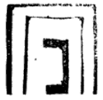
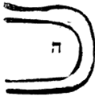
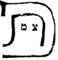

Pardes Rimmonim, English translation with the Hebrew.
We named it "Tzachtzachot" (the Dazzling Lights) because in it is explained the matter of the ten tzachtzachot that are upon Keter, well-known in the words of the Kabbalists, and likewise the matter of "clear light" (or tzach), "refined light" (or metzuchtzach), and "primordial light" (or kadmon). Its chapters number seven.
11:1:1 The Eleventh Gate: The Gate of Tzachtzachot.
שער האחד עשר הוא שער הצחצחות:
11:1:2 What is intended in this Gate is to explain the matter of the Tzachtzachot, which are the Sefirot hidden in the Root of all roots, according to what is received from the mouth of all the Kabbalists and of Rashbi, peace be upon him.
הכוונה בשער זה לבאר ענין הצחצחות הם הספירות הנעלמות בשרש כל השרשים כפי המקובל בפי כל המקובלים והרשב"י ע"ה:
11:1:3 Chapter One:
פרק ראשון:
11:1:4 The first among the commentators to reveal the matter of this inquiry is our teacher Hai Gaon, in a responsum. And although his wording is long, goes beyond our subject, and needs a broad explanation, nevertheless we shall not withhold our hands from copying it, since it is of great benefit.
המגלה הראשון אל ענין הדרוש הזה בין המפרשים הוא רבינו האי גאון בתשובת שאלה. ועם היות לשונו ארוך יוצא מענינינו וצריך ביאור רחב, עכ"ז לא נאסוף ידינו מלהעתיקו יען היותו תועלת רב.
11:1:5 And these are the words of the Geonim: A question was asked of the great luminary, the master of wisdom, our teacher Hai Gaon, of blessed memory, by Rav Paltoi and his companions: "Let our master teach us. For we find that our Sages, of blessed memory, [speak of] thirteen attributes that Moses our teacher, peace be upon him, received; and for Abraham our father, in a book that our Sages, of blessed memory, attributed to his name, which is Sefer Yetzirah, [the author] counts ten Sefirot. And we need to learn from his holy mouth: if the ten Sefirot are ten attributes, then we find thirteen attributes, [but] thirteen Sefirot we do not find. Or are there thirteen attributes alone, or ten Sefirot alone? We are in need of your teaching, and we await your answer." The answer to this question needs [going] within, and within the within. And many times before us and before you this question has been asked, in the days of the first generations and in the days of our ancient elders; and the explanation is long, not for one day nor for two days, until one is held in the cords of the hidden wisdom, stored up in the chambers of the prophecies and in the tradition of the sages, the masters of inscriptions [ba'alei reshumot]. Nevertheless, in view of your wisdom and your standing, we do not see that your question should be left wholly empty; and the paths of this answer are deep, if it reaches your hands in brief. The thirteen attributes spoken of in the Torah are derivative branches issuing from ten degrees called Sefirot, these corresponding to those, together with three hidden ones, heads of heads. And if these are not available to you, they are traditions of the ancients, each from the mouth of the other, up to the mouth of the prophets, of blessed memory. And the derivatives are the very actions, called attributes; and the roots, which are the fathers, are called Sefirot, not because they have a number, or are themselves reckoning and count, but by way of the secret of ten worlds that were made new from them, which have no reckoning and no way to apprehend them except for the One who created them alone; and He is Lord over all, who is not apprehended in any way or by any knowledge at all, blessed be He in His concealment. And Solomon alluded [to this] in the Song of Songs, saying (Song 6:8): "and maidens [ve-alamot] without number." And out of honor for your Torah, we have seen fit to hand over to you the names of the Sefirot as we received them from our elders, of blessed memory; and we have no permission to reveal more, out of [regard for] the hidden glory, as is written in the book of Proverbs (Prov. 25:2): "It is the glory of God to conceal a thing." The ten Sefirot were divided in their formation. The first three: the first is wondrous light [or mufla], a light that is not apprehended; rather it is unified, and compared to pure thought. And compared to it are the luminaries of knowledge [mada'] and intellect [sekhel], for thought judges between the two of them. And the last seven are seven luminaries; and three of them are the pan of merit and the pan of guilt, and the tongue of pardon tips the balance between them. And the fourth luminary is the one that renews the world of souls; they called it "the foundation of the world" [yesod olam], [and] the masters of inscriptions and the sages of the Talmud called it "the Righteous One of the world."
וז"ל הגאונים. נשאלה שאלה למאור הגדול אדון החכמה רבינו האי גאון ז"ל מרב פלטוי וחבריו. ילמדנו רבינו כי מצינו לרז"ל י"ג מדות שקבל מרע"ה. ולאברהם אבינו בספר יחסוהו רז"ל על שמו והוא ספר יצירה מונה שם י"ס ואנחנו צריכין ללמוד מפיו הקדוש אם י"ס הם י' מדות. א"כ י"ג מדות מצינו, י"ג ספי' לא מצינו. או י"ג מדות לבד, או י"ס לבד. לתורתך אנו צריכין ולתשובתך אנו מיחלים. תשובת שאלה זו צריך לפנים ולפני פנים וכמה זמנים לפנינו ולפניכם נשאלה שאלה זו בימי הדורות הראשונים ובימי קדמוננו הזקנים והפי' ארוך לא ליום אחד ולא ליומים עד היותו אחוז בחבלי החכמה הנעלמת הגנוזה בחדרי הנבואות ובמסורת החכמים בעלי רשומות. מ"מ אין אנו רואים מצד חכמתכם ומעלתכם להיות שאלתכם ריקנית מכל וכל ודרכי תשובה זו עמוקים אם תגיע לידכם בקצרה. י"ג מדות האמורים בתורה הם ענפי תולדות יוצאות מעשרה מעלות נקראות ספירות. אלו כנגד אלו. עם שלשה גנוזות ראשי ראשים ואם אינם מצויות לכם מסורות הם לקדמונים איש מפי איש עד מפי הנביאים ז"ל. והתולדות הן הן הפעולות נקראות מדות. והשרשים שהן האבות נקראו ספירות. לא מפני שיש להם מספר או הן עצמן חשבון ומנין רק על דרך סוד עשרה עולמות שנתחדשו מהן שאין להם חשבון ודרך להשיגם רק מי שבראם לבדו והוא אדון על הכל שאינו מושג בשום צד ובשום ידיעה כלל יתברך בהתעלמותו. ושלמה רמז בשה"ש (ו ח) באמרו ועלמות אין מספר. ומפני כבוד תורתכם ראינו למסור לכם שמות הספי' כמו שקבלנו אותם מזקנינו ז"ל ואין לנו רשות לגלות יותר מכבוד נעלם כמו שכתוב בספר משלי (כה ב) כבוד אלקים הסתר דבר. עשר ספירות נחלקו ביצירתן. ג' ראשונות הא' אור מופל"א אור שאינו מושג רק הוא מיוחד ונערך למחשבה הטהורה. ונערכים אליה מאורות המד"ע והשכ"ל כי המחשבה תדין בשניהם. וז' אחרונות הם ז' מאורות והג' מהם כף זכות וכף חובה ולשון הסליחה מכריע ביניהם. והמאור הד' הוא המחדש עולם הנשמות קראוהו יסוד עולם. בעלי רשומות וחכמי התלמוד קראוהו צדיקו של עולם.
11:1:6 And there is further an outer light, called "consuming fire," and its arms are north and right; and it is the end of all the luminaries and the beginning of all the deeds. And now I shall allude for you to the three supernal luminaries above the ten Sefirot. They have no beginning, for they are Name, Self, and Root [ש"ם ועצ"ם ושר"ש] of all roots; and thought cannot apprehend them, for the apprehension and knowledge of every created being falls short of apprehending [them]. In the name of our holy elders we have received their names: inner primordial light, which spreads forth in the hidden root and sparkles from the power of its spreading, in the likeness of two great lights, refined light and clear light; all of it one light and one root, hidden without end [le-ein sof]. And the sages of the Talmud warned against expounding the wisdom and the thought concerning what is not apprehended by any created being, and said: "What is too wondrous for you [ba-mufla mimkha], do not investigate"; "you have no business with hidden things." And as for what the masters of inscriptions said, that the Sefirot are like luminaries: [this is] not in the likeness of the luminary of the sun, the moon, and the stars, but [they are] spiritual luminaries, subtle and pure, inward, a radiance that makes the souls radiant. And we searched on every side of investigation, among our teachers the Kabbalists, [who received] from the mouth of the ancient elders, to know whether the three supernal ones have names distinct in themselves, as do those below them. And we found them all agreeing in one agreed view: that they have no known name, because of the greatness of their concealment, other than the names attributed to them under the name "luminaries"; and likewise the root, which has no beginning, has no known name. And the four-letter name, and all the more so all the other titles, are all particular to a created glory. And indeed, the name Yod He Vav He, which is the foundation of the degrees: the form of the first letter, in the likeness of a very fine point, was formed in its writing, a writing known to the masters of inscriptions, to indicate a wondrous secret: that there took shape and were formed a spiritual matter [golem] and form from the power of the three degrees, which are Name, Self, and Root. And from the hidden root there rose and spread an exalted and simple light of thought, and they spread in the very root and within it (another version: "and from the spreading in the very root they came, not," etc.), not outside it; and from them there took shape and were formed the power of knowledge and the power of intellect, and they are the beginning of a hidden spiritual formation. And this point received a strong and wondrous power of form, so that ten degrees were formed in it, subtle to the utmost subtlety; therefore their number rose to the number ten. And from the power of this point ten degrees took shape in the form of the letter He that is founded after it, and in the point of its writing, in the order that we have received from our teachers and our ancient elders; and all the powers were stored up within it, in the likeness of a spiritual treasury. And from the power of this second form there took shape and were formed the six extremities of the world of shaping [ha-gelimah]: a spiritual matter and form, simple and revealed, [issuing] from the first, which were stored up in the second letter; and they are the beginning of the revealing of the hidden worlds. And therefore the sages of the Sefirot called this Sefirah "the mirror of the hidden world." And the final He is the tikkun of the agents, and it brings all the stored-up powers out into complete action, and it is the completion of all the powers. Thus far the orders of the degrees; but it is not in our hands to write and explain this honored and awesome secret with an explanation broad and long beyond measure. And may the Lord, Former of all, give us and you a heart to know, etc. Thus far the words of the responsum of Rav Hai Gaon, of blessed memory. And because of the great concealment of his words, on which most of the bodies of the wisdom depend, we have seen fit to explain it here in a chapter of its own, for the scroll is too short for some of his pleasant words.
ועוד יש אור חיצון נקרא אש אוכלת וזרועותיו צפון וימין והוא סוף כל המאורות והתחלת כל המעשים. ועתה ארמוז לכם הג' מאורות העליונות על ע"ס אין להם התחלה כי הם ש"ם ועצ"ם ושר"ש כל השרשים ואין המחשבה יכולה להשיג בהם כי ההשגה ודעת כל נברא קצרה מהשיג. בשם זקנינו הקדושים קבלנו שמותיהם. אור פנימי קדמון והוא מתפשט בשרש הנעלם ומתנוצץ מכח התפשטותו כדמיון ב' אורים גדולים אור מצוחצח ואור צח כלו אור אחד ושרש אחד נעלם לאין סוף. וחכמי התלמוד הזהירו מלפרש החכמה והמחשבה ממה שאינו מושג לשום נברא, ואמרו במופלא ממך כו' אל תחקור אין לך עסק בנסתרות. ומה שאמרו בעלי רשומות שהספי' כדמות מאורות, לא כדמיון מאור השמש והירח והכוכבים רק מאורות רוחניות דקות וזכות פנימיות זהר מזהיר הנפשות. וחפשנו בכל צדדי החקירה מרבותינו המקובלים מפי זקנים הקדמונים לדעת אם יש לשלש העליונות שמות נבדלים בעצמן כאשר לשלמטה מהם. ומצאנום כלם מסכימים בדעת מוסכמת שאין להם שם ידוע מרוב העלמתן זולת השמות המיוחסים להם בשם מאורות, וכן השרש שאין לו התחלה אין לו שם ידוע. ושם בן ד' אותיות כ"ש שאר הכנויים כלם מיוחדים על כבוד נברא. ואמנם שם יו"ד ה"א וא"ו ה"א שהוא יסוד המעלות דמות האות הראשון כדמות נקודה דקה מאד נצטיירה בכתיבתה כתיבה ידוע לבעלי רשומות להורות סוד מופלא כי נתגלמו ונצטיירו גולם וצורה רוחניות מכח הג' מעלות שהם שם עצם ושרש. ומן השרש הנעלם עלתה ונתפשטה עלוי ופשוט אור מחשבי ומתפשטות בעצם השורש ובו (נ"א ומהתפשטות בעצם השורש באו לא כו') לא חוץ ממנו ונתגלמו ונצטיירו מהם כח המדע וכח השכל והן התחלת יצירה רוחניות נעלמת. וזאת הנקודה קבלה כח הציור חזק ומופלא להצטייר בה עשר מעלות דק בתכלית הדקות על כן עלה מספרם למספר עשרה. ומכח נקודה זו נתגלמו עשרה מעלות בצורת אות ה"א המיוסדת אחריה ובנקודת כתיבתה על הסדר אשר קבלנו מרבותינו ומזקנינו הקדמונים וכל הכוחות היו גנוזות בתוכה כדמות אוצר רוחני ומכח צורה זו השנית נתגלמו ונצטיירו שש קצוות עולם הגלימה גולם וציור רוחני פשוט וגלוי מן הראשון שהיו גנוזות באות השנית והן התחלת גלוי העולמים הנעלמים. וע"כ חכמי הספירות קראו ספירה זו מראה העולם הנסתר. והה"א האחרונה הוא תקון הפועלים ומוציאה כל הכוחות הגנוזות לפעולה שלימה והיא שלמות כל הכוחות. עד הנה סדרי המעלות רק אין בידינו לכתוב ולפרש זה הסוד הנכבד והנורא בפי' רחב וארוך יותר מדאי. והאדון יוצר הכל יתן לנו ולכם לב לדעת וכו'. עכ"ל תשובת ר' האי גאון ז"ל. ומפני רוב העלם דבריו שרוב גופי החכמה תלוים בה ראינו לבאר אותה הנה בפרק בפ"ע כי קצרה המגלה לקצת דבריו הנעימים:
11:2:1 We have already explained in Gate One, chapter 7, that the Gaon's intent in this responsum is not to say that they are thirteen Sefirot, God forbid, as appears from the plain sense of his words; and we proved this there conclusively.
כבר פירשנו בשער א' פ"ז שאין הנרצה להגאון בתשובה זו לומר שהם י"ג ספירות ח"ו כפי הנראה מפשטי דבריו כמו שהכרחנו שם הכרח גמור.
11:2:2 And the matter of the three hidden ones will be explained. And so he was precise in his wording, saying: "The thirteen attributes spoken of in the Torah are derivative branches issuing from ten degrees called Sefirot, these corresponding to those, together with three hidden ones, heads of heads," etc.
וענין שלש נעלמות יתבאר. וכן דקדק בלשונו שאמר י"ג מדות האמורות בתורה הם ענפי תולדות יוצאות מי' מעלות נקראים ספירות אלו כנגד אלו עם ג' גנוזות ראשי ראשים וכו'.
11:2:3 See: he did not want to bring "thirteen Sefirot" into his mouth, God forbid; rather he said "from ten degrees called Sefirot": that the ten are Sefirot, and above the ten there is no Sefirah at all; and with regard to the attributes, they rose to thirteen with the three mentioned, which are the hidden ones, as their matter will be explained. He further said: "And the derivatives are the very actions, called attributes; and the roots, which are the fathers, are called Sefirot." He means to explain the matter of Self and vessels. For the attributes [middot] are the vessels that measure out [moddedot] to a man according to his ways and according to the fruit of his deeds, whether little or much, whether good or bad, for they are subject to change. And not so the Self, which is what he titles with the language of "roots" and "fathers," because they are roots spreading forth from the light of the simple Self; and they are His Self, and they have no actions of change intrinsically, as we explained in the Gate of Self and Vessels. And he called them "fathers" since they are fathers and causes to derivatives, which are the attributes, the vessels that measure out, as we explained. And the Self is called "Sefirot" from the word sapphire [sappir], for it is a sapphire light; language wearies of telling its subtlety except by the parable of sapphire. "Not because they have a number, or are themselves reckoning and count, but by way of the secret of ten worlds that were made new from them." The meaning: as for the definition of the number ten meant in our language, the intent is not that the roots are divided into ten literally, God forbid, for the simple One is not divided into parts. Rather, number [applies] to them because the root spreads forth into ten worlds that were made new from the supernal roots, which are the Self, as we explained. And number is true of them from the side of the aspect of ten worlds, just as judgment and compassion are said of them from the side of the aspect of the vessels, as we explained in the Gate of Self and Vessels, chapter 4. "Which have no reckoning and no way to apprehend them except for the One who created them alone": explanation: even the vessels, although they are what necessitate reckoning in the roots, we do not on that account necessitate that they are a number, God forbid, and that they are revealed worlds; rather they are hidden, and they have no reckoning, God forbid. For their reckoning is from the side of their being divided by way of cause and effect, as we explained in the preceding gates. "And He is Lord over all," etc.: explanation: He is Lord over the roots and the attributes, all of them together. "And Solomon alluded in the Song of Songs: and maidens [ve-alamot] without number": the meaning is the ten worlds [olamot] made new from the ten hidden roots, which necessitate the number ten in the roots; nevertheless they have no number, [for] the number ten in the sense of limit is not true of them, since they have no number and division, and their number is by way of cause and effect, as we explained. "And we have no permission," etc.: to excuse himself for the reason that he did not reveal the matter of Self and vessels except by hint and extreme brevity. "And the ten Sefirot were divided in their formation": explanation: in their emanation. For "formation" [yetzirah] with regard to the Sefirot is emanation, just as we have seen "In the beginning He created [bara]," and the meaning is "He emanated," and many like them. And the meaning: when we say that they are divided into ten, the meaning is not that they are divided from the side of the Emanator; for in their aspect relative to the Emanator they are equal, unified with the utmost union. And their division, and their descent one from another from cause to effect, is from their own side, from the side of their emanation: for the cause is above the effect, and the effect below the cause.
הנה שלא רצה להעלות בפיו י"ג ספירות ח"ו. אבל אמר מי' מעלות נקראו' ספירות, שהעשרה הם ספי' ואין למעלה מי' שום ספי', ועלו לענין המדות לי"ג עם ג' הנזכרות שהם הנעלמות כמו שיתבאר עניינם. עוד אמר והתולדות הן הן הפעולות נקראות מדות, והשרשים שהן האבות נקראים ספירות. ירצה לבאר ענין עצמות וכלים. כי המדות הם הכלים המודדות לאיש כדרכיו וכפרי מעלליו אם מעט ואם הרבה אם טוב ואם רע כי הם בעלי השינוי. ולא כן העצמות שהם אשר מכנה בלשון שרשים ואבות מפני שהם שרשים מתפשטים מאור העצם הפשוט. והם עצמותו ואין להם פעולות השנוי בעצם כמו שבארנו בשער עצמות וכלים. וקראם אבות יען היותם אבות וסבות אל תולדות שהם המדות הכלים המודדות כדפי'. והעצם נקרא ספירות מלשון ספיר כי הוא אור ספיריי ילאה הלשון להגיד דקותו אלא במשל הספיריי. לא מפני שיש להם מספר או הן עצמן חשבון ומנין, רק על דרך סוד עשרה עולמות שנתחדשו מהם. הכונה כי גדר המספר עשר הנרצה בלשונינו, אין הכוונה שיהיו השרשים נחלקין לעשר ממש ח"ו. שאין האחד הפשוט נחלק לחלקים. אמנם המספר בהם מפני היות שרש מתפשט אל תוך עשר עולמות שנתחדשו מן השרשים העליונים שהם העצמות כדפי'. ויצדק בהם המספר מצד בחינת עשר עולמות. כמו שנאמר בהם דין ורחמים מפאת בחינת הכלים כדפי' בשער עצמות וכלים פ"ד. שאין להם חשבון ודרך להשיגם רק מי שבראם לבדו. פי' אפי' הכלים עם היות שהם המחייבים חשבון בשרשים לא מפני כן נחייב שהם מספר ח"ו ושהן עולמות מתגלים, אלא הם נעלמות ואין להם חשבון ח"ו כי חשבונם הוא מצד שהם מתחלקות בדרך עילה ועלול כדפי' בשערים הקודמים. והוא אדון על הכל וכו'. פי' שהוא אדון על השרשים והמדות כלם בכלל. ושלמה בשה"ש רמז ועלמות אין מספר. הכונה העולמות העשרה המתחדשות מן העשרה השרשים הנעלמים שהם מחייבים מספר העשר בהשרשים, עכ"ז אין להם מספר שלא יצדק בהם מספר העשר הגבוליי שאין להם מספר וחילוק, ומספרם הוא על דרך עילה ועלול כדפי'. ואין לנו רשות וכו'. להנצל מטעם שלא גילה ענין העצמות והכלים אלא ברמז וקצור מופלג. ועשר ספירות נחלקו ביצירתן. פי' באצילתן. כי היצירה בספיר' הוא אצילות, כמו שראינו בראשית ברא, והכונה האציל, וכיוצא בהם הרבה. והכונה כי מה שאנו אומרים שהם נחלקות לעשר, אין הכונה שהם נחלקות מצד המאציל. שבבחינתם אל המאציל הם שוים מיוחדים תכלית היחוד. וחלוקם ורדתם זו מזו מעילה לעלול, הוא מצד עצמם מצד אצילותם. שהעילה למעלה מעלול, והעלול למטה מהעילה.
11:2:4 And behold, he intended to divide the Sefirot, the first three by themselves and the last seven by themselves, because of the superiority of the three over the seven, as explained in the Gate of Essence and Governance. And he said that this division is from the side of their emanation: these are near to the Emanator, and these descend further from before Him. "The first is wondrous light, a light that is not apprehended; rather it is attributed and compared to pure thought." Explanation: the Supernal Keter is called "light," for we have nothing in the corporeal world as subtle as the subtlety of light, by which to represent spiritual things. And because of the subtlety and concealment of Keter beyond the other Sefirot, they called it "wondrous" [mufla]; explanation: hidden, from the language "seeing it is wondrous [peli]" (Judg. 13:18). And this is what he further explained, saying "a light that is not apprehended." For although we say that it is wondrous light, our intent is not to say that we apprehend its wondrousness, so that we might say of it that it is wondrous light; rather, that it is a light not apprehended by any apprehension in the world at all. So that when we come to relate the Sefirot to the limbs of the body, we relate it and compare it to thought, subtle to the utmost subtlety, which is not a limb among the limbs of the body nor a substance among its substances, but is an action that prevails over the body; and it is the subtlest and most spiritual action among all the actions of the body. And he called it "pure thought": that is to say, not when that thought is in a man about corporeal things, for that is certainly a coarse thought; rather the meaning is pure thought, that is, when he thinks about pure, subtle, and spiritual things, for then that thought is without doubt exalted above intellect and knowledge, for it is thought about things subtler than the human intellect. "And compared to it are the luminaries of knowledge and intellect": these are two spiritual powers in the body of man, and Chokhmah and Binah are likened to them. And thought is subtler and more spiritual than knowledge and intellect. For knowledge and intellect are two powers in the body that are more revealed; but thought is more spiritual, superior, without being discernible. For such is the law of Keter, which is subtler than Chokhmah and Binah. And he used the expression "and compared to it," etc., to hint that the three of them are reckoned as one: and just as knowledge and intellect are one with thought, which rides upon them, so it is with the Sefirot, and Chokhmah and Binah are attached to Keter and included in it. And he says "luminaries," that is to say, the spirituality that spreads from Keter into Chokhmah and Binah. And they said that thought judges between the two of them: that is, insofar as the arbitration between Chokhmah and Binah is drawn from Keter, in the secret of Da'at, as we explained in the Gate of Arbiters, chapter 6. "Three of them are the pan of merit," etc.: that is, Gedulah is the pan of merit, Gevurah the pan of guilt. "And the tongue," etc.: this is Tiferet, called "the tongue of pardon," because it is called "tongue" in its aspect with Binah, as we explained in the Gate "Ten and Not Nine," chapter 2; and therefore it is then the tongue of pardon, for Binah is the Day of Atonement, as is known, and it is the tongue of pardon from her side. "And the fourth luminary is the one that renews," etc.: this is Yesod; and he put it before Netzach and Hod for the reason we gave in the Gate of the Order of the Emanation, chapter 4. And Malkhut is called "the world of souls," for through her Yesod begets the souls, as is known. "And the sages of the Talmud," etc.: like what our Sages, of blessed memory, said (Chagigah 12b): "On what does the world stand? On one pillar, and Righteous is its name, as it is said (Prov. 10:25): and the righteous is the foundation of the world." And by this they taught that the standing and subsistence of Malkhut is through Yesod and through its renewal; and this is what was expounded above.
והנה כיון לחלק הספי', ג' ראשונות לבד וז' אחרונות לבד, מפני מעלת השלש על הז', כמבואר בשע' מהות וההנהגה. ואמר שענין החלוק הזה הוא מצד אצילותן, אלו קרובות למאציל ואלו יורדות יותר מאת פניו. האחד אור מופלא אור שאינו מושג רק הוא מיוחס ונערך למחשבה הטהורה. פי' כ"ע נקרא אור, כי אין לנו דקות יותר בעולם הגשמי כדקות האור להמשיל בו הרוחניות. ומפני דקות והעלם הכתר על שאר הספירות קראוה מופלא, פירוש נעלם מלשון (שופטים יג יח) והוא פלאי. וזהו שבאר עוד ואמר אור שאינו מושג. כי עם היות שנאמר שהוא אור מופלא. אין כונתינו לומר שאנו משיגים הפלאתו עד שנאמר בו שהוא אור מופלא. אלא שהוא אור שאינו מושג בשום השגה בעולם כלל. עד שכאשר נבא ליחס הספי' אל אברי הגוף נייחסהו ונעריכהו אל המחשבה הדקה תכלית הדקות שאינה אבר מאברי הגוף ולא עצם מעצמיו אלא היא פעולה גוברת על הגוף והיא הפעולה היותה דקה ורוחניות שבכל פעולת הגוף. וקראה מחשבה טהורה, כלומר לא כאשר תהיה המחשבה ההיא באדם בדברים הגשמיים שהיא מחשבה עבה ודאי, אלא הכונה מחשבה טהורה דהיינו בחשבו בדברים הטהורים ודקים ורוחניים שאז תתעלה המחשבה ההיא על השכל והמדע בלי ספק כי היא מחשבה בדברים דקים יותר משכל האנושי. ונערכים אליה מאורות המדע והשכל. הם ב' כחות רוחניות בגוף האדם, ובהם נמשלות חכמה ובינה. והמחשבה היא יותר דקה ורוחניות מהמדע והשכל. כי המדע והשכל הם ב' כחות בגוף יותר מתגלות, אמנם המחשבה היא יותר רוחניות מעולה בלי ניכרת. כי כן משפט הכתר שהוא יותר דק מחכמה ומבינה. ונקיט לשון ונערכים אליה וכו', לרמוז ששלשתם חשובות כאחד. וכמו שהמדע והשכל הם א' עם המחשבה שרוכבת עליהם, כן הדבר בספירות. והחכמה והבינה נטפלים אל הכתר ונכללים בו. ואומר מאורות, כלומר רוחניות המתפשט מן הכתר בחכמה ובינה. ואמרו שהמחשבה תדין בשתיהם, היינו בערך שמן הכתר נמשך ההכרעה לבין החכמה והבינה בסוד הדעת כדפי' בשער המכריעין פ"ו. הג' מהם כף זכות וכו'. היינו גדולה כף זכות, גבורה כף חובה. ולשון וכו' הוא התפארת נקרא לשון הסליחה, מפני שהוא נק' לשון בבחינתו עם הבינה כדפי' בשער עשר ולא תשע בפ"ב, ולכן אז הוא לשון הסליחה, כי הבינה היא יום הכיפורים כנודע, והוא לשון הסליחה מצדה. והמאור הד' הוא המחדש כו'. הוא היסוד והקדימו לנצח והוד מן הטעם שאמרנו בשער סדר האצילות פ"ד. ומלכות נק' עולם הנשמות כי על ידה היסוד מוליד הנשמות כנודע. וחכמי התלמוד וכו'. כענין אז"ל (חגיגה י"ב) על מה העולם עומד על עמוד א' וצדיק שמו שנא' וצדיק יסוד עולם. והורו בזה עמידתה וקיומה של המלכות הוא ע"י היסוד וע"י חדושה והוא הנדרש לעיל.
11:2:5 "And there is further an outer light," etc. And he related [text: ve-yichad, read ve-yichas] Malkhut to Yesod, so that it would be in the order Tiferet, Yesod, and Malkhut. And nevertheless he explained "an outer light," etc., that is, the revealed one among them all. And the witness to this is (Exod. 24:17): "And the appearance of the glory of the Lord was like consuming fire on the top of the mountain, in the eyes of the children of Israel"; and therefore he titles her with the name "consuming fire." And the reason she is called so is to indicate judgment. "And its arms are north and right": explanation: the arms of Malkhut are Netzach and Hod. "And it is the end of the luminaries and the beginning of all the deeds": explanation: Malkhut is the end of the luminaries, which are the Sefirot, and she is the beginning of all the deeds, as in the matter of (Ps. 104:24) "In wisdom You have made them all," for she is the architect through whom all the work of creation was made. [This is] to indicate that she is the end of all the Emanation. And he dwelt at length on this to indicate that although he put Malkhut before Netzach and Hod, it is not on that account necessitated that she be eighth in the Emanation; rather she is always tenth, and the reason for putting her first is as we explained. "And now I shall allude," etc., "they have no beginning." Explanation: the apprehension and knowledge of the Sefirot is [given] to the prophets from effect to cause. The illustration of this: when the prophet apprehends the effect, he rises up to the cause; and from this cause he rises from there to its cause. The illustration of this: when he apprehends Malkhut, which is the effect of Yesod, he rises in his understanding and his apprehension and apprehends that the end of Malkhut, from below upward, is the beginning of her cause, which is Yesod. And likewise from Yesod he understands and knows that its end is the beginning of its cause, which is Hod. And in this way he rises in the seeing of his prophecy up to Keter. But in Keter itself, and from Keter upward, there is no apprehension for any prophet or seer. And this matter is likewise explained in Ezekiel: he said the word "appearance" up to ten [times], and at the tenth he said (Ezek. 1:28) "and I saw, and I fell on my face," for he no longer retained the strength to apprehend, for it is impossible. And so Rashbi explained in the Book of the Tikkunim (in the Introduction, folio 6, and these are its words): "And when he reached the likeness of Keter, which is the tenth grade, see what is written of it: 'and I saw, and I fell on my face,' for he could not bear it." Thus far its words.
ועוד יש אור חיצון וכו'. ויחד [ויחס] המלכות אל היסוד כדי שיהיה כסדר תפארת יסוד ומלכות. ועכ"ז פי' אור חיצון וכו', דהיינו הנגלה שבכלם. והעד על זה (שמות כד יז) ומראה כבוד ה' כאש אוכלת בראש ההר לעיני ב"י, ולכן מכנה אותה בשם אש אוכלת. והטעם שנק' כך להורות על הדין. וזרועותיו צפון וימין פי' זרועותיה של המלכות הם נצח והוד. והיא סוף המאורות והתחלת כל המעשים פי' המלכות היא סוף אל המאורות שהם הספירות והיא התחלת כל המעשים כענין (תהלים קד) כלם בחכמה עשית שהיא האדריכ"ל שעל ידה נעשה כל מעשה בראשית. להורות שהיא סוף לכל האצילות. והאריך בזה להורות שעם היות שהקדים המלכות אל נצח והוד לא מפני זה הוכרח שתהיה היא שמינית לאצילות אלא לעולם היא עשירית וטעם הקדימה כדפי'. ועתה ארמוז וכו' אין להם התחלה. פי' כי השגת וידיעת הספירות הוא אל הנביאים מעילה לעלול. המשל בזה כי כאשר ישיג הנביא העלול, יעלה עד העילה. ומן העלה הזאת יעלה משם אל עילתה. המשל בזה כאשר ישיג המלכות שהיא עלולה מן היסוד, יעלה בהשכלתו ובהשגתו וישיג כי סוף המלכות ממטה למעלה היא התחלת עילתה שהיא היסוד. וכן מן היסוד ישכיל וידע כי סופו הוא תחלת עלתו שהוא ההוד. וכן עד"ז יעלה בראיית נבואתו עד הכתר. אמנם בכתר עצמו ומכתר ומעלה אין השגה לשום נביא וחוזה. וכן נתבאר ענין זה ביחזקאל אמרו לשון מראה עד עשר, ובעשירית אמר ואראה ואפול ע"פ, כי לא עצר עוד כח להשיג, כי הוא מן הנמנע. וכן פי' הרשב"י בס' התיקונים (בהקדמה ד"ו וז"ל) וכד מטא לדמות כתר דאיהו דרגא עשיראה חזי מה כתיב ביה ואראה ואפול על פני דלא יכיל למסבל עכ"ל.
11:2:6 And to this the Gaon intended in saying "they have no beginning": for even in Keter "you shall see the utmost part of it, but you shall not see all of it" (Num. 23:13); so how should one apprehend even the beginning of what is above Keter? "For they are Name, Self, and Root," etc. It was difficult for him: if so, if there are already three worlds above Keter, so that they are hidden for a known cause, in the end they are thirteen Sefirot. If so, there is a difficulty with what the author of Sefer Yetzirah said, that they are "ten and not nine, [ten] and not eleven," and "a single Lord," etc.; for are they not thirteen according to his way? To this he said that they are not in the count of the Sefirot, God forbid; rather they are Name, Self [ש"ם ועצמו"ת ושר"ש], and Root of all roots. And he said "Name, Self, and Root," which are three things and all one, and all is Ein Sof. For the Name is the Self, and the Self is the Root, and He and His Name are one, unified. And therefore He has no name at all. For just as the manifestation of His Self is not bounded, so His Name is not bounded, and He has no name at all; rather, He is necessary of existence, and the Name is known to His Self and not to another. And since the three hidden ones are in Him, therefore they are not Sefirot, but the very Self of the Ein Sof. "And thought cannot apprehend," etc.: as we explained, that no thought grasps the Ein Sof, for the reason mentioned. "Primordial light, refined light, clear light": these three names, in the name of light, primordiality, and clearness, all indicate concealment: just as the clear and bright light, which the eye cannot master, so the three hidden ones admit no apprehension by the sight of the intellect, of the prophet, or of others. And the first is called "primordial" to indicate its primordiality over all in the Root. And as for the matter of clear [and] refined, we shall explain further on, with God's help, which of them comes first. And the Gaon explained that these three names are found for these luminaries; and the reason for their division into these three is because of their spreading within their Self, not because of their being revealed outward to another; rather their spreading and their revealing is within their Self. And this is what he said: "and it spreads forth in the hidden root," etc. And to indicate that although with our mouths we call them and title them in the likeness of three lights, in their Self they are one, he said "all of it one light, and one Self, and one root." And because thought and investigation concerning them are a cause of danger, he said "and the sages of the Talmud," etc. And he said that they have no known name, just as the Ein Sof has no known name, because of the greatness of its concealment, as we explained.
ואל זה כיון הגאון באמרו אין להם התחלה, כי אפי' בכתר אפס קצהו יראה וכלו לא יראה, ואיך ישיג אפי' התחלה ממה שלמעלה מהכתר. כי הם שם ועצם ושרש וכו'. הוקשה לו א"כ שכבר יש למעלה מהכתר ג' עולמות עד שיהיו נעלמות לסבה ידועה, סוף סוף הם י"ג ספירות, א"כ קשה למה שאמר בעל ס"י שהם י' ולא ט' ולא י"א ואדון יחיד וכו' והלא י"ג הם ע"פ דרכו. לזה אמר כי אינם במנין הספי' ח"ו אלא הם ש"ם ועצמו"ת ושר"ש כל השרשים. ואמר שם ועצם ושרש, שהם ג' דברים והכל אחד והכל א"ס. כי השם הוא העצם והעצם הוא השרש והוא ושמו אחד מיוחד. ולכן אין לו שם כלל. כי כמו שמציאות עצמותו אינו נגבל, כן אין שמו נגבל, ואין לו שם כלל, אלא מחויב המציאות, והשם נודע אל עצמותו ולא לזולתו. ולהיות שהג' נעלמות הם בו, לכן אינם ספי' אלא עצם הא"ס. ואין המחשבה יכולה להשיג וכו'. כדפי' שאין מחשבה נתפסת בא"ס מן הטעם הנזכר. אור קדמון אור מצוחצח אור צח. ג' שמות אלה בשם אור וקדמות וצחות הכל מורה על העלם, כמו האור הצח והבהיר שאין העין יכול לשלוט בו, כן הג' נעלמות אין השגה בהם אל ראות השכל והנביא וזולתם. והראשון נקרא קדמון להורות אל קדמותו על הכל בשרש. ובענין צח מצוחצח נבאר לפני' בע"ה איזו מהם קודמת. ופי' הגאון כי ג' שמות אלו נמצאו לאלה המאורות. וטעם חלוקם לשלשה אלה מפני התפשטותן בעצמותן לא מפני גלויין לחוץ אל זולתן אלא התפשטותן וגילויין הוא בעצמותן. וז"ש והוא מתפשט בשרש הנעלם וכו'. ולהורות שעם היות שבפינו נקראם ונכנם בדמות ג' אורות בעצמותן הן אחד, אמר כולו אור אחד ועצם אחד ושרש אחד. ומפני שהמחשבה והחקירה בהם סבת הסכנה, אמר וחכמי התלמוד וכו'. ואמר שאין להם שם ידוע כמו שאין לא"ס שם ידוע לרוב העלמו כדפי'.
11:2:7 And the matter of the names and the titles, and even the four-letter name: all of it is a hint to the Sefirot, as he goes on to explain.
וענין השמות והכנויים ואפי' שם בן ד' הכל רמז אל הספירות כדמפרש ואזיל.
11:2:8 And the matter of the four arrays mentioned in his wording, in the letters of the Name, will be clear to the one who delves when he remembers what we wrote in the Gate of the Order of the Emanation, chapter 5; and this matter will be explained further in the Gate of the Four-Letter Name, chapter 4.
וענין ד' המערכות הנז' בלשונו באותיות השם יתבאר אל המעיין כאשר יזכור מה שכתבנו בשער סדר האצילות פ"ה, וכן יתבאר עוד ענין זה בשער שם בן ד' בפ"ד:
11:3:1 We have seen fit in this chapter to explain the matter of these three hidden ones in a fine light, so that it may settle in the intellect of the one who understands. And the matter is that "His thoughts are not our thoughts, nor His ways our ways" (cf. Isa. 55:8). For when a man imagines in his intellect bringing some manifestation into being, whatever it may be, his thought does not act. And even if he imagines and depicts in his intellect the form of the manifestation that he wills to bring into being, nevertheless it is as though it had not been, until he acts and it goes out into actuality. And so actuality turns out to be more complete than potentiality: for potentiality lacks manifestation and has no manifestation or completeness at all, and actuality is the principal thing and the manifestation, and apart from it there is nothing. And not so are the actions and the beings of the King of kings of kings, the Holy One, blessed be He. For when it arose in His will to bring into being and to emanate the pure and holy Emanation, then it was emanated and formed wholly in His Self, without change in Him, God forbid; rather [it was] a manifestation unified with Him, so that there is no difference at all between the Emanator and that manifestation; rather He and they are all one, one Self and one root. And even if we relate that Emanation to the three aspects, as we shall explain, which are primordial, clear, and refined light, the aspect of their division is not relative to their Self, but relative to the aspect of their branches, which spread forth and are emanated. And the matter in this: we have already explained in the Gate of the Order of the Emanation that the Emanation is included in Keter, Chokhmah, and Binah, because they are the root of Chesed, the root of Din, and the root of Rachamim. And likewise in the order of their emanation, Netzach was in Chesed and Chesed in Chokhmah, included in one another, and all is one; and likewise Hod in Gevurah and Gevurah in Binah, included in one another; and likewise Malkhut in Yesod and Yesod in Tiferet; and all in Keter. And therefore, when the will arose to emanate the Emanation, there were formed in the very root three points, which are Keter, Chokhmah, Binah, and in them all the Emanation is included. And as for the reason for their being divided into three although they are unified with the utmost union: the manifestation of this division is impossible except in a borrowed sense. For just as the very root is one, so the three points are one, and likewise the point and the root are all one thing; but we relate them to three because they are root and source to three branches, which are Keter, Chokhmah, and Binah. And [these are] not Keter, Chokhmah, Binah literally, but Keter, Chokhmah, Binah as formed in Keter, from the side of the manifestation of the beginning of their spreading from the very root into Keter.
ראינו בפרק זה לבאר בענין ג' נעלמות אלה באור יפה יתיישב בשכל המשכיל. והענין כי לא מחשבותיו מחשבותינו ולא דרכיו דרכינו כי כאשר ידמה האדם בשכלו להוות איזו מציאות שיהיה, הנה מחשבתו לא תפעיל. ואף אם ידמה ויצייר בשכלו צורת המציאות אשר ברצונו להוות, עכ"ז והיה כלא היה עד יפעל ויצא לפועל. ונמצא הפועל שלם מהכח. כי הכח חסר המציאות ואין לו מציאות ושלימות כלל, והפועל הוא העיקר והמציאות וזולתו אין דבר. ואין כן פעולותיו והוייתיו של ממ"ה הקב"ה. כי כאשר עלה ברצונו להוות ולהאציל אצילות הטהור והקדוש הנה אז נאצל ונצטייר כלו בעצמותו בלי שנוי בו ח"ו אלא מציאות מתייחד עמו עד שאין בין המאציל והמציאות ההוא הבדל כלל אלא הוא והם הכל אחד ועצם אחד ושרש אחד. ואף אם נייחס האצילות ההוא אל הג' בחינות כאשר נבאר שהם אור קדמון וצח ומצוחצח. אין בחינת חלוקם בערך עצמותם אלא בערך בחי' ענפיהם המתפשטות ומתאצלות. והענין בזה, כי כבר בארנו בשער סדר האצילות כי האצילות נכלל בכתר וחכמה ובינה מפני היותן שרש החסד ושרש הדין ושרש הרחמים, וכן בסדר אצילותן היו נצח בחסד חסד בחכמה נכללין זה בזה והכל א', וכן הוד בגבורה וגבורה בבינה נכללים זב"ז, וכן המלכות ביסוד ויסוד בת"ת, והכל בכתר. ולכן בעלות הרצון להאציל האצילות נצטיירו בעצם השרש ג' נקודות שהם כתר חכמה בינה ובהם נכלל כל האצילות. וטעם היותם מתחלקים אל ג' עם היות שהם מיוחדים תכלית היחוד, מציאות החילוק הזה א"א אם לא ע"ד השאלה. כי כמו שהעצם השרש אחד כן הג' נקודות אחד וכן הנקודה והשרש הכל דבר אחד, אמנם נייחסם אל השלשה מפני שהם שורש ומקור אל ג' ענפים שהם כתר חכמה ובינה. ולא כתר חכמה בינה ממש אלא כתר חכמה בינה המצטיירים בכתר מצד מציאות התחלת התפשטותם מעצם השרש אל הכתר.
11:3:2 And so it turns out that Keter, Chokhmah, Binah draw effluence from their sources, unified in the Keter, Chokhmah, Binah that are in Keter; and the Keter, Chokhmah, Binah that are in Keter draw from the hidden source in the very root, which is primordial, clear, and refined light, unified with the utmost union. And when it comes to our mind how mighty is the union of Keter, Chokhmah, Binah as revealed in the Sefirot (that is to say, the Sefirot themselves, as we were compelled [to hold] concerning their union in particular: a union exalted above the union of the other Sefirot, as we explained in the Gate of Essence and Governance), and we exalt above their union an exaltation and intensification of union, all the more so [must we exalt] the union of the Keter, Chokhmah, and Binah that are in Keter, until we say that in Keter there is only one source, one Self, and one root. And if we relate it to three, it is because of the nourishment of the three Sefirot from there, which are Keter, Chokhmah, Binah. And when afterwards we go further still and exalt, above the union of the three roots that are in Keter, the union of the three hidden [points], then their union, with great intensification, will not be far from us; and they are related to three lights only insofar as three roots, which are one, draw from them; and they are related to three because they pour out effluence and blessing to the three Sefirot, unified with the utmost union. And from here the one who delves may go further in the union of the Sefirot in the very root, that they are all unified with a mighty union: Netzach within Chesed and Chesed within Chokhmah, thus:

in the way we explained in the Gate of Their Standing, with God's help.
והנה נמצא שכתר חכמה בינה הם שואבים שפע ממקוריה' המיוחד בכתר חכמה בינה שבכתר. וכח"ב שבכתר שואבים ממקור הנעלם בעצם השרש שהוא אור קדמון וצח ומצוחצח המיוחדים תכלית היחוד. וכאשר יעלה בדעתנו עוצם ייחוד כתר חכמה בינה המתגלים בספירות, ר"ל הספירות בעצמם כפי אשר חוייבנו בייחודם בפרט יחוד מתעלה על יחוד שאר הספירות כדפי' בשער מהות והנהגה. ונעלה על יחודם עלוי והפלגת היחוד. עאכ"ו יחוד הכתר וחכמ' ובינה שבכתר, עד שנאמר שאין בכתר אלא מקור אחד ועצם אחד ושרש אחד. ואם נייחסהו לג', הוא מפני יניקת הג' ספירות משם שהם כתר חכמה בינה. ואח"כ עוד נפליג ונעלה על יחוד הג' שרשי' שבכתר יחוד הג' [נקודות] הנעלמות, הנה לא ירחק ממנו יחודם בהפלגה מרובה, ואינם מתייחסים בג' אורות אלא בערך שמהם שואבים שלשה שרשים שהם אחד ומתייחסים בשלשה מפני שהם מריקים שפע וברכה לג' הספי' מיוחדות תכלית היחוד. ומכאן יפליג המעיין בייחוד הספירות בעצם השרש שהם כולם מתייחדים יחוד אמיץ. נצח בתוך חסד וחסד בתוך חכמה כזה:
על הדרך שפירשנו בשער עמידתן בע"ה.
11:3:3 And likewise Hod within Gevurah and Gevurah within Binah, thus:

וכן הוד בתוך גבורה וגבורה בתוך בינה כזה:
11:3:4 And likewise Malkhut within the Righteous One, and the Righteous One within Tiferet, and Tiferet within Keter, thus:

And all this while they are within Keter. And how much more are they unified while they are within the unified root, which is not divided into parts at all! And if we relate the number three to it, it is because they are sources to the three sources of three branches, as we explained. But relative to themselves, in their spreading, they are unified with the utmost union.
וכן המלכות בתוך הצדיק והצדיק בתוך התפארת ותפארת בתוך כתר כזה:
וכל זה בהיותן בתוך הכתר. ומה יתייחדו עוד בהיותן בתוך השרש המיוחד בלתי מתחלק לחלקים כלל. ואם ניחסהו מספר השלשה הוא מפני שהם מקורות לג' מקורות של ג' ענפים כדפי'. אבל בערך עצמם בהתפשטותם הם מיוחדים תכלית היחוד.
11:3:5 And behold, this manifestation, union, and source was revealed in its simple manifestation from the side of the aspect of His will toward the Emanation. And when we said "was revealed," the meaning is the manifestation of the being [havayah], which was not pouring forth [text: mashpa'at; read mushpa'at, "receiving effluence"] because of the concealment of the Emanation within His Self; and now, from the side of its spreading into the Emanation, it pours forth effluence into those sources. And this is [what we mean by] revealing: not that they are revealed to the emanated ones, all the more so not to the created ones, all the more so not to the formed ones, all the more so not to the made ones. For their manifestation is not revealed to any other than Him, as we explained. Rather, relative to the drawing forth of His providence into the Emanation, this matter is attributed to Him as spreading and revealing, not that it is revealed to any other than His Self, as we shall explain in the coming chapters. And the divine Rav Chamai Gaon revealed this matter further, and we shall copy it in a chapter of its own, as we found it copied by Rabbi David in the book Magen David (although he did not intend this inquiry at all), with the explanation of Rabbi Aharon upon his words; for he is a true teacher in this delightful inquiry, with the help of Heaven.
והנה המציאות והיחוד והמקור הזה נתגלה במציאותו הפשוט מצד בחינת רצונו אל האצילות. ואמרנו נתגלה הכונה מציאות ההווייה שלא הי' משפעת [מושפעת] להעלם האצילות בעצמותו ועתה מצד התפשטותו באצילות משפיע במקורות ההם. והיינו גלויים, ולא שהם גלוי אל הנאצלי"ם כ"ש אל הנבראי"ם כ"ש אל הנוצרי"ם כ"ש אל הנעשי"ם. כי אין מציאותם מתגלה אל זולתו כדפי'. אלא בערך המשכת השגחתו באצילות יתייחס ענין זה אליו אל התפשטות וגלוי ולא שיהיה נגלה אל זולת עצמותו, וכמו שנבאר בפרקים הבאים. וגילה הענין הזה יותר האלקי רב חמאי גאון ונעתיק אותו בפרק בפ"ע כפי אשר מצאנוהו שהעתיקו רבי דוד בס' מגן דוד עם היות שלא כוון אל הדרוש הזה כלל עם פי' רבי אהרן על דבריו כי הוא מורה צדק בדרוש הנחמד הזה בס"ד:
11:4:1 Rav Chamai Gaon wrote in the Book of Union [Sefer ha-Yichud] [concerning] the three first beings, which he placed above Keter, as we explained in the first chapter, in the responsum of our teacher Hai: "For these three names are all one matter and one Self, cleaving with a mighty cleaving, without separation and without joining, in the Root of all roots; like a corporeal parable: the heart, the lungs, and the spleen, one root for all of them and for the other limbs in the whole cavity. And from primordial light pure thought was drawn, like the drawing forth of the thoughts of the heart; and from the refined and the clear light, as from two springs, knowledge and intellect were drawn. And by means of intellect and knowledge all the spiritual flames took substance, this in this and this with this, like the matter of the flames that hold fast to the strength of the coals; and what would be (another version: "what was") gathered and hidden, this within this and this within this, until the time of the will of the Primordial Agent arrived, and the spiritual things went out from potentiality into action, and the Emanation of the upper world was emanated, down to the foundation of the tenth stone, called in the language of the sages of the secrets "thick light" [או"ר ע"ב]. And because of the great thickness they also called it "mixed darkness," for all the powers of the flames are mixed in it and change within it; and it is the foundation of all the worlds, spiritual and corporeal. And how many kinds of colors take substance in them and are formed in its power, some of them spiritual forms and some of them corporeal forms; for it is the last seal of all the seals." Thus far the words of the master, our teacher Chamai Gaon, in the Book of Union. And this is the explanation of our teacher Aharon, peace be upon him:
כתב רב חמאי גאון בספר היחוד ג' ההוויות ראשונות שהניח למעלה מן הכתר, כמו שבארנו בפ' ראשון בתשובת רבינו האיי. כי אלו השלשה שמות כלם ענין אחד הם ועצם אחד דביקים דבוק אמיץ מבלי פרוד ובלי חבור בשרש כל השרשים. כדמיון משל גשמי הלב והריאה והטחול שרש אחד לכלם, ולשאר האברים שבכל החלל. ואור קדמון נמשכה ממנו המחשבה הטהורה כהמשך מחשבות הלב, ומן האור המצוחצח והצח כשתי מעיינות נמשכה מהן המדע והשכל. ובאמצעית השכל והמדע נתעצמו כל השלהביות הרוחניות זה בזה וזה עם זה כענין הלהבות הנאחזות בתוקף הגחלים ומה שיהיה (נ"א שהיה) כנוס ונסתר זה בתוך זה וזה בתוך זה עד שהגיע זמן רצון הפועל הקדמון ויצאו מן הכח אל הפעולה הרוחניות ונאצל אצילות העולם העליון עד יסוד אבן העשירית הנקרא בלשון חכמי הרזים או"ר ע"ב. ומרוב העובי קראוהו גם כן חשך מעורב, כי כל כחות השלהביות מתערבות בה ומשתנות בתוכה והוא יסוד כל העולמות רוחניים וגשמיים. וכמה מיני גוונים מתעצמים בהן ומצטיירים בכחה מהם צורות רוחניות ומהם צורות גשמיות. כי היא חותם האחרון לכל החותמות. עכ"ל הרב רבינו חמאי גאון בספר היחוד. וזה פרישת רבינו אהרן ע"ה.
11:4:2 "Behold, the master's intent is to explain that these three names are one matter and one Self, cleaving with a mighty cleaving, without separation. And I think he said this not to distinguish them from the angels and the composite things, but to distinguish them somewhat from the ten Sefirot, which are one. That is to say: the ten Sefirot, although joining and separation are not to be pictured in them, [are so] with regard to the drawing forth of the effluence; but these three are all one Self and one matter in the Root of all roots, and they are His very Self; and understand. For he did not say 'from the Root of all roots' but 'in the Root of all roots,' to indicate the greatness of the union: that they are in His Self, blessed be He, and His Self is in them. And because the thing is hard to picture, that there should be three and all one matter, he brought a corporeal parable, and said that this is 'like a corporeal parable.' He said: the heart, the lungs, and the spleen are one root for all of them. And we see that they are separate limbs; and we are compelled to say that before they were formed in actuality in these forms, they were stored up and mixed in that unformed mass [golem] from which they would come to be at the beginning of their coming-to-be from the seminal drop, while the action of coming-to-be had not yet spread forth to distinguish each and every thing by itself. Rather, those powers of the limbs were stored up and mixed in that mass, not separate from one another, so that you would decree of the three of them, and of the other powers of the limbs stored up there, that they were then one matter and one Self, although we say that there were stored up there the power of the heart, the power of the lungs, and the power of the spleen. And so one may illustrate with some resemblance, although it is not a true parable. And we say: we know from tradition that the most spiritual, subtlest, and most hidden spreading of all the Emanation was the three upper, spiritual Sefirot, which are Keter, Chokhmah, and Binah. And if so, it is necessary that these three Sefirot, although they are unified in a wondrous oneness and a hidden subtlety, were far more wondrous and hidden when they were already formed in the Root of roots, which is the Ein Sof, in a oneness, subtlety, and concealment more wondrous than they are after their spreading. For whatever comes nearer to the root is more unified, like the branches of a tree; for if it were not so, the matter would go on to infinity. And we do not say that the parable resembles the thing illustrated on all its sides. And this is it: the limbs, after they went out into actuality, nothing remained of them of that manifestation which they had before their going out; but not so here: for because the Ein Sof does not receive change, [Keter, Chokhmah, Binah] remained stored up there after Keter, Chokhmah, Binah were emanated, just as they were before the spreading of their emanation. For the Emanation is only like one who kindles a lamp from a lamp, with regard to the absence of change in the Emanator. And because the stored-up ones are more hidden, they are distinguished. And so we can say of all the other Sefirot: that Binah is the six extremities, and likewise the six extremities are Binah itself, since the six extremities remained there hidden, and there is no difference between them except from the side of concealment and revealing. And this is what he said, that there is no separation at all between the Sefirot, so as to say that they are substances separate in themselves; rather they are all one, for each one is included of them all. And he said: 'from primordial light pure thought was drawn,' that is, Keter, drawn from it like the drawing forth of the thought of the heart; 'and from the refined and the clear light,' which are like two springs, 'knowledge was drawn,' which is Chokhmah, 'and intellect,' which is Binah. 'And by means of intellect and knowledge all the spiritual flames took substance, this in this and this with this': so that you do not find the one without the other, nor the other without it; so that if you picture yourself pointing with your finger to one of them, you are pointing to all of them, for they are all in it.
הנה כוונת הרב לבאר שג' שמות אלה ענין א' ועצם א' דבקים דבוק אמיץ בלי פרוד. ואחשוב שאמר זה לא להבדילם מהמלאכים והמורכבים אבל להבדילם הבדל מה מהי' ספירות שהם א'. ר"ל הי"ס עם שלא יצוייר בהם חבור ופרוד לענין המשכת השפע אבל אלה השלשה הכל עצם אחד וענין א' בשרש כל השרשים והן הן עצמותו, והבן. כי לא אמר משרש כל השרשים אלא בשרש כל השרשים, להורות על רוב היחוד שהם בעצמותו ית' ועצמותו בהם. ולמה שהדבר קשה להצטייר שתהיינה ג' והכל ענין א', הביא משל גשמי ואמר שזה כדמיון משל גשמי. אמר הלב והריאה והטחול שורש א' לכלם, וראינו שהם אברים נפרדים, ונתחייב לומר שקודם שיצטיירו בפועל באלו הצורות היו גנוזות ומעורבות באותו הגולם שיתהוו ממנו בתחלת הווייתן מהטיפה זרעיית עם היות שעדיין לא נתפשט פעל ההויה להבדיל כל דבר ודבר לעצמו. אבל היו אותן כחות האברים גנוזות ומעורבות בגולם ההוא בלתי נפרד זה מזה וזה מזה עד שתגזור על שלשתן ועל שאר כחות האברים הגנוזות שם שהם היו אז ענין א' ועצם א', עם היותנו אומרים ששם גנוזות כח הלב וכח הריאה וכח הטחול. וכן יש להמשיל בקצת דמיון אע"פ שאינו משל אמת. ונאמר אנחנו ידענו מפי השמועה שהתפשטות היותר רוחני והיותר דק ונעלם מכל האצילות היו הג' ספי' העליונות הרוחניות הם כתר חכמה ובינה. וא"כ נתחייב שאלה הג' ספירות עם היותן מתייחדות באחדות נפלא ודקות נעלם יותר נפלאות ונעלמות עד מאד שכבר יצטיירו בשרש השרשים והוא הא"ס באחדות ודקות והעלם יותר נפלא ממה שהם אחר התפשטותן כי כל מה שהדבר מתקרב אצל השרש הוא יותר מתאחד כדמיון ענפי האילן. שאל"כ ילך הדבר אל בלתי תכלית. ולא נאמר שהמשל דומה לנמשל מכל צדדיו. וזהו כי האברים אחר שיצאו אל הפועל לא נשאר מהם שום מציאות מאותו המציאות שהי' להם קודם צאתם, משא"כ בכאן כי בעבור שהאין סוף לא יקבל שינוי נשארו שם גנוזות אחר שנאצלו כח"ב כמו שהיו קודם התפשט אצילותן. כי האצילות אינו אלא כמדליק נר מנר לענין העדר השינוי במאציל. ובעבור היות הגנוזות יותר נעלמות יובדלו. וכן נוכל לומר בכל שאר הספי' שהבינה היא הו' קצוות וכן הו' קצוות הם הם הבינה אחר שנשארו שם השש קצוות נעלמות ואין הבדל ביניהם כ"א מצד העלם וההתגלות. וז"ש שאין בין הספירות שום פירוד לומר שהם עצמים נבדלים בעצמם. אבל הם הכל אחד כי כל א' כלולה מכלם. ואמר אור קדמון נמשכת ממנו המחשבה הטהורה, שהוא הכתר נמשך ממנו כהמשך מחשבת הלב. ומן האור המצוחצח וצח שהם כשתי מעיינות נמשכות מהם המדע, שהיא החכמה. והשכל, שהיא הבינה. ובאמצעות השכל והמדע נתעצמו כל השלהביות הרוחניות זה בזה וזה עם זה, עד שלא תמצא האחת בלתי האחרת ולא האחרת בלתה. עד שאם תצייר שאתה רומז באצבעך לאחת מהם אתה רומז לכלם כי כלם בה.
11:4:3 "And the matter of the spreading from intellect and knowledge is like the matters of the flames that hold fast to the strength of the coals. And what was stored up and hidden, this within this and this within this, was forever in that mode of being stored up, until the time of the will of the Primordial Agent arrived, and the spiritual things went out from potentiality into action, and the Emanation of the upper world was emanated, down to the foundation of the tenth stone, which is Malkhut, which is called in the language of the sages 'thick light.' And because of her great thickness in comparison to what is above her, they also called her 'mixed darkness,' for all the flames are mixed in her; and she is the foundation of all the spiritual worlds, which are all the Sefirot, for through her they act, and without her they would not act. And she is the foundation of the corporeal worlds, for she pours forth to them their manifestation. And how many kinds of colors take substance in her and are formed within her, according to the power of each one of the Sefirot that pour effluence into her, some of them spiritual forms and some of them corporeal forms, according to what is needed to act; for she is the last seal of all the forms." Thus far his words.
וענין התפשטות מן השכל והמדע כענייני הלהבות הנאחזות בתוקף הגחלים. ומה שהיו גנוזים ונסתרים זה בתוך זה וזבת"ז, היו לעולם באותו אופן מן הגנוזה. עד הגיע זמן רצון הפועל הקדמון ויצא מן הכח אל הפעולה הרוחניות ונאצל אצילות עולם העליון עד יסוד אבן העשירית היא המלכות היא הנקרא בלשון חכמים אור עב. ומרוב עביו בהקש אל מה שלמעלה ממנה קראוהו ג"כ חשך מעורב, כי כל השלהביות מעורבות בה והיא יסוד כל העולמות הרוחניים שהם כל הספי'. כי על ידה פועלות, ובלעדה לא יפעלו. והיא יסוד העולמות הגשמים, כי היא משפעת להם מציאותם. וכמה מיני גוונים מתעצמים בה ומצטיירים בתוכה, כפי כח כל אחת מהספי' המשפיעות בה מהן צורות רוחניות ומהם צורות גשמיות, כפי הצריך לפעול, כי היא חותם אחרון לכל הצורות עכ"ל.
11:4:4 Behold, in the explanation of a holy mouth, filled with the praise of the Lord, blessed be He, he speaks of the matter of the three hidden ones: how they are a manifestation of the first three that remained there in the very root, a manifestation subtle and hidden, fairer and more complete by far than their revealed manifestation; and they are unified with the utmost union, and the count of three is not to be pictured in them except relative to their manifestation revealed after the spreading.
הנה בפי' פה קדוש ימלא תהלת ה' ברוך הוא מדבר בענין הג' נעלמות איך הם מציאות ג' ראשונות שנשארו שם בעצם השרש מציאות דק ונעלם יפה ושלם יותר ויותר ממציאותם המתגלה והם מיוחדים תכלית יחוד ולא יצויר בהם מנין השלש אלא בערך מציאותם המתגלה אחר ההתפשטות.
11:4:5 And behold, through the Gaon Rav Chamai and the explanation of Rabbi Aharon upon him, we lack nothing at all of all that we sought; and they serve us as support for all that was expounded on this matter in the preceding chapter, without our remarking on their words and their explanation at all, for love of brevity.
והנה ע"י הגאון רב חמאי ופרישת רבי אהרן עליו לא חסרנו מכל מבוקשנו כלל. והם לנו מעיר לעזור אל כל הנדרש בענין הזה בפ' הקודם בלי שנעורר בדבריהם וביאורם כלל לאהבת הקצור.
11:4:6 And behold, now it is not difficult for us that they are thirteen attributes, since they are a manifestation of the first three, hidden in their source; just as we have no difficulty from the manifestation of the six extremities hidden in Binah, as the master explained. And they are the very ten Tzachtzachot, because each one of the first three includes, in its middle and in its manifestation, unified in its Self, all the lines: the line of Chesed in Chokhmah, the line of Din in Binah, the line of Rachamim in Keter, as we dwelt on at length above. And by this is explained what the master, our teacher Hai Gaon, explained in his responsum, when he said that the first array, which is in the form of the Yod, which has three points, a tip above, a tip below, and a point in the middle, indicates Keter, Chokhmah, and Binah, which spread from Name, Self, and Root [מש"ם ועצ"ם ושר"ש], that is, the three hidden ones. And they said "took shape and were formed": the meaning is the matter [golem], which is the vessels, and the form, which is the Self, that is, the form and soul of the Emanation, as explained in the Gate of Self and Vessels, chapter 4. And he said that they are "from the power of the three hidden ones," for through them they were emanated. And the meaning: at the time when the will arose before Him to emanate the Yod, which [Sefirot] are included in three points, that is, three Yods, the three points that are in the Yod, as we explained above, then the three acquired manifestation in the very root, as we explained in the preceding chapter. And from the power of that manifestation, which spread in the root itself, the first three were emanated, with the three included in three. For in Chokhmah two are included and hidden, not seen, which are Chesed [and] Netzach; and in Binah two are hidden, which are Gevurah [and] Hod; and in Keter three are hidden, which are Tiferet, Yesod, and Malkhut, as we explained. And the rest of the responsum is clear.
והנה עתה לא יקשה לנו שהם י"ג מדות אחר שהם מציאות ג' ראשונות הנעלם במקורם, כמו שלא יקשה עלינו ממציאות ו' קצוות הנעלמות בבינה כדפי' הרב. והם הם י' צחצחות, מפני שכל אחד משלשה ראשונות כולל באמצעיתו ובמציאותו מיוחד בעצמותו כל הקוים קו החסד בחכמה קו הדין בבינה קו הרחמים בכתר כפי אשר הארכנו לעיל. ובזה יתבאר מה שפירש הרב רבינו האי גאון בתשובתו, שאמר שהמערכת הראשונה שהיא בציור היוד שיש לה שלשה נקודות עוקץ למעלה ועוקץ למטה ונקודה באמצע להורות על הכתר והחכמה והבינה שהם מתפשטות מש"ם ועצ"ם ושר"ש דהיינו השלשה הנעלמות. ואמרו נתגלמו ונצטיירו. הכונה הגולם שהם הכלים. והצורה שהוא העצמות. דהיינו צורת ונשמת האצילות כמבואר בשער עצמות וכלים בפ"ד. ואמר כי הם בכח השלשה נעלמות כי על ידם נאצלו. והכונה כי בעת עלות רצון לפניו להאציל היו"ד שהם נכללות בשלשה נקודות דהיינו שלשה יודי"ן שלשה נקודות אשר ביו"ד כדפי' לעיל, הנה אז קנו מציאות השלשה בעצם השרש כדפי' בפרק הקודם. ומכח המציאות ההוא שנתפשט בשרש עצמו, נאצלו שלשה ראשונות עם השלשה נכללות בשלשה. כי בחכמה נכללים שתים ונעלמים בלתי נראים שהם חסד נצח, ובבינה נעלמים שנים שהם גבורה הוד, ובכתר נעלמים שלשה שהם תפארת יסוד ומלכות כדפי'. ושאר התשובה מבוארת.
11:4:7 Behold, the matter of the Tzachtzachot hidden in the Ein Sof has been explained from the words of the Geonim.
הנה נתבאר מתוך דברי הגאונים ענין הצחצחות הנעלמות בהאין סוף:
11:5:1 And so Rashbi, peace be upon him, explained in the Zohar, Parashat Pekudei (folio 239a), and these are his words: "Ein Sof does not stand to be made known, nor to make an end, nor to make a matter [davar], as the First Ayin brought forth beginning and end. Who is the beginning? This is the supernal point, which is the hidden head of all, which stands within thought; and it makes an end, which is called 'the end of the matter' [sof davar]. But there, Ein Sof: not for wills, nor for lights; not lamps in that Ein Sof. All these lights and lamps depend [on it] to subsist by them, and they do not stand to cleave. The one who knows and does not know is none other than the supernal will, hidden of all hidden, Ayin. And when the supernal point and the World to Come ascend (another version: 'ascended'), they know only the scent, like one who smells scents and is settled." Thus far its words.
וכן ביאר הרשב"י ע"ה בזהר פ' פקודי (דף רל"ט.) וז"ל אין סוף לא קיימא לאודעא ולא למעבד סוף ולא למעבד דבר כמה דאי"ן קדמאה אפיק ראש וסוף מאן ראש דא נקודה עלאה דאיהו רישא דכלא סתימאה דקיימא גו מחשבה ועביד סוף דאקרי סוף דבר. אבל להתם אין סוף, לא לרעותין ולא לנהורין, לאו בוצינין בההוא אין סוף. כל אלין נהורין ובוצינין תליין לאתקיימא בהו, ולא קיימי לאתדבקא, מאן דידעי ולא ידעי, לאו איהו אלא רעו עלאה סתימאה דכל סתימין אי"ן. וכד נקודה עלאה ועלמא דאתי אסתלק (נ"א אסתלקו) לא ידעין בר ריחא כמאן דארח בריחין ואתבסס עכ"ל.
11:5:2 And the explanation of his words: the Root of roots, called Ein Sof, does not stand to be revealed, because of the greatness of its concealment, for there is no knowledge of it at all. And this is what he said: "does not stand to be made known." And he said that besides its being impossible to know it and to apprehend it relative to its aspect, according to the manifestation of its concealment, it also does not stand to be revealed and to spread forth so that one might recognize it and apprehend it. For its Self is not apprehended in any way, except for the apprehension of its actions, that is, its Sefirot. And it is known that revealing and spreading forth come through a thing's coming to be with a beginning and an end, for this is the definition of coming-to-be, that it has a beginning and an end. To this he said that the Ein Sof does not stand to make beginning and end, which is "end" and "matter." And the meaning: "end" is its one extreme, and "matter" is its second extreme; and this is "end" [סו"ף] and "matter" [דב"ר], for from above downward the beginning of a matter is [its] end. And he said that the Ein Sof does not stand to reveal its manifestation in "end" and "matter" so as to be apprehended, like Keter, which is called Ayin. And he said "the First Ayin," to indicate that even in its hidden aspect, called "First," that is, its aspect relative to the Emanator, it does not resemble Ein Sof at all, because of the greatness of its concealment. [This is] because "the First Ayin brought forth beginning and end": explanation: Keter is revealed, and its revealing is through the beginning and the end, that is, Chokhmah and Malkhut, as he goes on to explain. And through it is the revealing of Keter, because in Keter is the aspect of Chokhmah, which is the beginning, and the aspect of Binah, which is the aspect of the end; and its revealing is through Chokhmah and Malkhut, which are the beginning and the end, with the middle certainly included. "Who is the beginning? This is the point," etc.: explanation: the intent is Chokhmah, for it is the beginning and first of the Emanation, in the way we explained in Gate Three, chapters 3 and 7. And he said that although it is the beginning of revealing, it is not that it is revealed with an intrinsic revealing; rather [it is] the beginning of a slight revealing. And therefore he went further and said "hidden, which stands," etc., and it is apprehended only in thought alone. And insofar as the beginning of thought is there, therefore it is the first of the revealing of Keter. "And it makes an end," etc.: explanation: for the beginning of thought is the end of action; for there is Chokhmah at the beginning and Chokhmah at the end, and this is Yod at the beginning and Yod at the end. And the emanation of Malkhut is from there, as in the matter Rashbi, peace be upon him, explained in the Tikkunim (Tikkun 69, folio 103): "I am asleep [yeshenah]: I am second [sheniyah] to Chokhmah," and as we shall explain in the Gate of Manifestations. And therefore Chokhmah "makes an end," which is Malkhut, the end of the Emanation. "But there," etc.: explanation: the whole matter of the beginning and the end is in the Emanation and in the Sefirot; "but there," in the Ein Sof mentioned, [it is not so]. "Ein Sof: not for wills," etc.: the meaning is that will in the Creator, that is to say, in the Ein Sof, is impossible; because if we said that He wills, He would turn out to change from will to will, and this is impossible in the law of the Ein Sof, necessary of existence, who is not subject to changes. Rather, the matter of will is the first emanation, which descends from Him in a chain, and through that will He performs His will, in the likeness of the Self and the vessels: for the vessels are subject to change, and the Self performs the change through them. And therefore the beginning of the spreading of the Emanation is the will to emanate. But this will is hidden, for it is not literally a revealed emanation; rather it is a will through which He is willing to emanate.
ופי' דבריו, כי שרש השרשים הנקרא אין סוף אינו עומד להתגלות מפני רוב העלמו שאין בו ידיעה כלל. וז"ש לא קיימא לאודעא. ואמר כי בזולת שא"א לדעתו ולהשיגו בערך בחינתו כפי מציאות העלמו. ג"כ אינו עומד להתגלות ולהתפשט כדי שיכירהו וישיגהו. כי אינו מושג עצמותו בשום אופן אם לא השגת פעולותיו דהיינו ספירותיו. ונודע כי הגילוי וההתפשטות הוא ע"י התהוות הדבר בתחלה וסוף שזהו גדר ההויה שיש לה ראש וסוף. לזה אמר שאין הא"ס עומד למעבד תחלה וסוף שזהו סוף ודבר. והכוונה סוף היינו קצהו האחד ודבר היינו קצהו השני, וזהו סו"ף ודב"ר, כי ממעלה למטה תחלת דבר הוא סוף. ואמר שאין הא"ס עומד לגלות מציאותו בסוף ודבר כדי שיושג כמו הכתר הנק' אי"ן. ואמר אי"ן קדמאה. להורות כי אפי' בבחינתו הנעלמת הנקרא קדמאה דהיינו בחינתו בערך המאציל אינו דומה לא"ס כלל מפני רוב העלמו. מפני שאי"ן קדמאה אפיק ראש וסוף. פי' הכתר הוא מתגלה, וגלויו הוא ע"י הראש והסוף דהיינו חכמה ומלכות כדמפרש ואזיל. ועל ידו הוא גלוי הכתר מפני שבכתר בחי' החכמה שהוא הראש ובחינת הבינה שהיא בחינת הסוף, וגלויו הוא ע"י חכמה ומלכות שהם הראש והסוף עם כלל האמצעי ודאי. מאן ראש דא נקודה וכו'. פי' הכוונה על החכמה כי הוא ראש וראשית לאצילות ע"ד שפי' בשער ג' בפ"ג וז'. ואמר שעם היות שהוא תחלת הגלוי לא שיתגלה גילוי עצמי אלא תחלת הגלוי קצת. ולכן הפליג ואמר סתימאה דקיימא כו' ואינה מושגת אלא במחשבה לבד. ובערך ששם תחלת המחשבה לכן הוא ראשית לגילוי הכתר. ועביד סוף וכו' פי' כי תחלת המחשבה הוא סוף המעשה כי חכמה בראש וחכמה בסוף וזהו יו"ד בראש וי' בסוף. ואצילות המלכות משם כענין שפי' הרשב"י ע"ה בתקונים (תקונא ס"ט דף ק"ג) אני ישנה אני שניה לחכמה, וכמו שנבאר בשער המציאות. ולכן החכמה עביד סוף שהיא המלכות סוף האצילות. אבל להתם וכו'. פי' כל ענין הראש והסוף הוא באצילות ובספירות, אבל להתם בא"ס הנז'. א"ס לא לרעותין וכו'. הכוונה כי הרצון בבורא ר"ל בהא"ס א"א מפני שאם נאמר שהוא רוצה נמצא משתנה מרצון לרצון וזה נמנע בחק הא"ס מחוייב המציאות שאינו בעל שנויים. אמנם ענין הרצון הוא האצילות ראשון המשתלשל ממנו, וע"י הרצון ההוא הוא פועל רצונו כדמיון העצמות והכלים. שהכלים בעלי השינוי, והעצמות פועל השינוי על ידם. ולכן תחלת התפשטות האצילות הוא הרצון להאציל. אמנם הרצון הזה נעלם שאינו אצי' מתגלה ממש אמנם הוא רצון שע"י מתרצה להאציל.
11:5:3 And behold, this will is not the One who wills; rather the Self of the Ein Sof is the One who wills, and He is called "willing" through the will, in the way we explained concerning the matter of judgment and limit in the Gate of Self and Vessels, chapter 4. And in this way it turns out that the will is so near to the Emanator that it is not emanation; rather it is Self, and not literally Self. Rather it is the manifestation of the arising of His will to emanate the emanated ones; and therefore the will is the emanated ones themselves, which came to be and were found in the manifestation of His Self from the side of the arising of His will to emanate the emanated ones, as we explained in chapter 3.
והנה הרצון הזה אינו הרוצה, אמנם עצמות הא"ס הוא הרוצה והוא נקרא רוצה ע"י הרצון כדרך שפי' בענין הדין והגבול בשער עצמות וכלים בפ"ד. ועד"ז נמצא היות הרצון הקרוב אל המאציל עד שאינו אצילות אמנם הוא עצמות ולא עצמות ממש. אמנם הוא מציאות עלות רצונו להאציל הנאצלים ולכן הרצון הוא הנאצלים עצמם שנתהוו ונמצאו במציאות עצמותו מצד עלות רצונו להאציל הנאצלים כדפי' בפ"ג.
11:5:4 And behold, according to this there will already be a will to bring a will into existence; for a will arises to bring a will into existence, until there is a point level with the Emanator. And these wills, in the secret of their intrinsic union in the very Emanator, are called "wills" [re'utin]. And because of the concealment of the Ein Sof, in which the wills are, he said "Ein Sof: not for wills nor for lights," for they are likewise titled with the name "lights," as in the matter of primordial light, clear light, refined light. But the will through which He works change in this world is Keter, which is what is called "will"; and through it the Ein Sof wills, just as through Chokhmah He is called wise. "Not lamps in that Ein Sof": explanation: even when the Sefirot shine and are titled with the name "luminaries," they do not resemble the Ein Sof. And not only the Ein Sof, but even the hidden luminaries unified in His Self, as we explained. "All these lights," etc.: explanation: all the Sefirot depend on those hidden roots, because they are sources to the Sefirot; for through the hidden luminaries the Sefirot draw effluence from the Ein Sof, like the tree, which draws moisture from its roots, and the main watering is to the roots. So the Sefirot turn out to depend on the roots and to subsist through them. "And they do not stand to cleave": explanation: although the hidden sources and roots, which are the Tzachtzachot unified in the very root, are the life and subsistence of the Sefirot, nevertheless the roots are not revealed to the Sefirot, and the Sefirot do not apprehend them, because of the greatness of their concealment. And this is what he said, "and they do not stand to cleave": explanation: they do not stand in a state to be apprehended at all. "The one who knows and does not know," etc.: explanation: those of whom it is true that they know and that they do not know are only Keter, Chokhmah, and Binah. For the other Sefirot never know, and never did know, and the roots were never revealed to them, such that we might say that there is a time when they do not know. But the matter of "knows and does not know" is true of Keter, Chokhmah, Binah, as he concludes. And nevertheless these three are not equal in their apprehension. For Keter, in its hidden aspect, which is called "the supernal will" [re'u ila'ah], which is a title in the language of will, like "wills" [re'utin] mentioned with the Ein Sof; and it is "hidden of all hidden," called Ayin, for being is not true of it at all: this aspect is always unified in the hidden roots, which are its cause, and the cause of the roots hidden in it, as we explained above. But Chokhmah and Binah: their apprehension is at times, that is, only at the time of their ascent to the hidden aspect in Keter, which is the source, in which there are likewise three roots, as we explained in chapter 3. And this is what he said: "And when the supernal point," which is Chokhmah, "and the World to Come," which is Binah, "ascends," that is, at the time of the union of the two of them with the utmost union, so that "ascended," in the plural, is not true of them, but "ascends," in the singular. And then, at the time of their ascent in union in the supernal root, Keter, nevertheless they do not apprehend the roots, except like the scent of one who smells a good scent without touching the spice; rather he smells it, and through it he is settled and sweetened. So these Sefirot, after their ascent, [apprehend] the roots and draw sustenance from them through their root that is exalted in Keter; not that they themselves draw sustenance and draw and apprehend the very hidden root. And therefore their nourishment is called [nourishment] from Ein Sof, and likewise their ascent [is called ascent] to Ein Sof.
והנה לפ"ז כבר יהיה רצון להמציא רצון כי יעלה רצון להמציא רצון עד שיהיה נקודה משתווה אל המאציל. והרצונות האלה בסוד יחודם העצמי בעצם המאציל נקרא רעותין. ומפני התעלמות הא"ס שבו הרעותין אמר א"ס לא לרעותין ולא לנהורין שכן מכונים בשם נהורין. כענין אור קדמון אור צח אור מצוחצח. ואמנם הרצון שעל ידו יפעל שינוי בעוה"ז הוא הכתר שהוא הנקרא רצון. וע"י הא"ס רוצה כמו שע"י החכמה נקרא חכם. לאו בוסינין בההוא אין סוף. פי' אפי' בעת היות הספירות מאירות מכונים בשם מאורות אינם דומות לאין סוף. ולאו דווקא לאין סוף אלא אפי' למאורות הנעלמות המיוחדות בעצמותו כדפי'. כל אלין נהורין וכו'. פי' כל הספירות הם תלוים בשרשים הנעלמים ההם מפני שהם מקורות אל הספי' שע"י המאורות הנעלמות ישאבו הספי' שפע מהאין סוף. כמו האילן שהוא שואב הלחות משרשיו ועקר ההשקאה אל השרשים. נמצאו הספי' תלויים בשרשים ומתקיימים על ידם. ולא קיימי לאתדבקא. פי' עם היות שהמקורות והשרשים הנעלמים שהם הצחצחות המיוחדות בעצם השרש הם חיותם וקיומם של הספי', עכ"ז אין השרשים מתגלות לספירות ואין הספי' משיגים אותם מפני רוב העלמם. וז"ש ולא קיימי לאתדבקא, פי' אינם עומדות בענין שיושגו כלל. מאן דידעי ולא ידעי וכו'. פי' אותם שיצדק בהם שיודעים ושאינם יודעים אינם אלא כתר חכמה ובינה. כי שאר הספי' לעולם אינם יודעים ומעולם לא ידעו ולא נתגלו להם השרשים עד שנאמר שיש עת שאינם יודעים. אמנם יצדק ענין ידעי ולא ידעי, בכתר חכמה בינה כדמסיק. ועכ"ז ג' אלה אינם שוים בהשגתם. כי הכתר בבחינתו הנעלמת שהוא הנקרא רעו עלאה שהוא כנוי לשון רצון כמו רעותין הנז' בא"ס. והוא סתימאה דכל סתימין, הנקרא אי"ן. שלא יצדק עליו הישות כלל ועיקר. הבחינה הזאת לעולם מתייחדת בשרשים הנעלמים שהם סבתו וסבת השרשים הנעלמים בו כדפי' לעיל. אבל חכמה ובינה השגתם הוא לעתים. דהיינו דווקא בעת עלותם אל בחינת הנעלמת בכתר שהוא המקור. שבו ג"כ ג' שרשים כדפי' בפ"ג. וז"ש וכד נקודה עלאה שהוא החכמה ועלמא דאתי שהוא הבינה, אסתלק, שהוא בעת התייחדות שתיהם תכלית היחוד עד שלא יצדק עליהם אסתלקו לשון רבים אלא אסתלק לשון יחיד, ואז בעת עלייתם ביחוד בשרש העליון כתר. עכ"ז אינם משיגות בשרשים, אלא כריח המריח בריח הטוב בלתי פגעו בבושם, אלא מריח בו, וע"י מתבסס ומתמתק. כך הספי' האלה אחר עלייתם הם [משיגות] בשרשים ויונקים מהם ע"י שרשם הנעלה בכתר. ולא שינקו וישאבו הם עצמם וישיגו בעצם השרש הנעלם. ולזה יקרא יניקתם מא"ס וכן עלייתם לא"ס.
11:5:5 Behold, from this passage, as explained, it appears that with regard to the apprehension of the roots the whole Emanation is divided into three divisions. The first is the seven days of the Structure, which do not apprehend the hidden ones at all; rather their ascent is up to Binah, in the secret of the Jubilee, and from there upward they do not apprehend, but from there they draw sustenance from Keter and from Chokhmah; except for Tiferet and Malkhut, for in the secret of their union they ascend up to Keter, where their source, the Self, is, as the matter and its reason were explained in Gate Five, chapter 6. And the second is Chokhmah and Binah, which apprehend the hidden roots only at intervals, at the time of their ascent; and that apprehension is not in the very Emanator, but "like one who smells," etc., as we explained above. And there is no doubt that even so the apprehension of Chokhmah will not be equal to the apprehension of Binah, but certainly with the exaltation of one over the other, although they ascend together, because they are male and female, and the one does not suffice without the other. The third is Keter, whose apprehension, in its hidden aspect, is always equal; it is never separated from its root, and it and the root are all one thing, unified in its upper aspect, as we explained.
הנה מתוך המאמר הזה בפי' נראה שבענין השגת השרשים נחלק כל האצילות לשלש מחלוקת. הא' הם ז' ימי הבנין, שאינם משיגות בנעלמות כלל אלא עלייתם עד הבינה בסוד היובל ומשם ולמעלה אינם משיגות אלא משם ינקו מהכתר ומהחכמה, בזולת הת"ת והמלכות כי בסוד יחודם יעלו עד הכתר ששם מקורם העצמות כמו שנתבאר הענין וטעמו בשער ה' בפ"ו. והב' הם חכמה ובינה, שלא ישיגו בשרשים הנעלמות אם לא לפרקים בעת עלותם. וההשגה ההיא אינה בעצם המאציל, אמנם כמאן דארח וכו' כדפי' לעיל. ואין ספק שעכ"ז לא יהיה שוה השגת החכמה עם השגת הבינה אלא בעלוי זו על זו ודאי. עם היותם עולות יחד מפני שהם זכר ונקבה והא בלא הא לא סגייא. הג' הוא הכתר, שזה בבחינתו הנעלמת השגתו שוה לעולם לא יפרד משרשו והוא והשרש הכל דבר א' מתאחד בבחינתו העליונה כדפי'.
11:5:6 And Rashbi further dwelt at length on the explanation of these Tzachtzachot and the roots that are in the Ein Sof:
ועוד האריך הרשב"י בביאור הצחצחות האלה והשרשים שהם באין סוף:
11:6:1 In the book of the Zohar, Parashat Noach (folio 65a), in some versions in the books, and these are its words: "Rabbi Shimon said: I raised my hand in prayers above. When the supernal will, above and above, stands upon that will which is not known and not grasped at all, forever, [it is] the head that is hidden more, above. And that head brought forth what it brought forth, which is not known, and illumined what it illumined, all in hiddenness. The will of supernal thought is to pursue after it and to be illumined from it. One hanging is spread, and from within that hanging, in the pursuit of that supernal thought, it reaches and does not reach, etc. Then this light of thought that is not known strikes the light of the hanging that stands, which shines from what is not known, etc. And then this light of thought that is not known strikes the light of the hanging, and they shine as one, and nine palaces are made, palaces for palaces, which are not lights and are not spirits and are not souls, and there is none who stands in them. The will of all nine lights that all stand in thought, which is one of them in the count, all of them [is] to pursue after them at the time that they stand in thought; and they do not cleave and are not known. And these stand neither in will nor in supernal thought; they grasp them and do not grasp. In these stand all the secrets of faith; and all those lights from the secret of supernal thought that are below are all called Ein Sof. Up to here the lights reach and do not reach, and are not known. Here there is no will and no thought. When thought shines and does not know from what it shines, then it is clothed and hidden within Binah, and it shines what it shines, and it enters this into this until they are all included as one. And in the secret of the sacrifice, when it ascends, all is bound this with this and shines this in this. Then they all stand in ascent, and thought is wrapped in Ein Sof. That light which shines from it, [from which] supernal thought [shines], which does not know it at all, is called Ein Sof; for from it it is found and stands and shines to whom it shines. And on this all stands. Happy is the portion of the righteous in this world and in the world to come." Thus far its words.
בספר הזהר פ' נח (דס"ה.) בקצת נסחאות בספרי'. וז"ל אר"ש ארימת ידא בצלותין לעילא, כד רעותא עלאה לעילא ועילא, קיימא על ההוא רעותא דלא אתידע ולא אתפס כלל לעלמין. רישא דסתים יתיר לעילא. וההוא רישא אפיק מה דאפיק דלא ידיע, ונהיר מה דנהיר כלא בסתימו. רעו דמחשבה עלאה למרדף אבתריה ולאתנהרא מיניה. חד פריסו אתפריס ומגו ההוא פריסא ברדיפו דההוא מחשבה עלאה מטי ולא מטי כו'. כדין בטש האי נהירו דמחשבה דלא אתידע בנהירו דפרסא דקיימא דנהיר ממה דלא ידיע כו'. וכדין דא נהירו דמחשבה דלא אתידע בטש בנהירו דפריסא ונהרין כחדא ואתעבידו ט' היכלין, להיכלין דלאו אינון נהורין ולאו אינון רוחין ולאו אינון נשמתין ולאו אית מאן דקיימא בהו רעותא. דכל תשע נהורין דקיימי כלהו במחשבה דאיהו חד מנייהו בחושבנא כלהו למרדף אבתרייהו בשעתא דקיימי במחשבה ולא מתדבקן ולא אתיידיעו. ואלין לא קיימי לא ברעותא ולא במחשבה עלאה, תפסין בהו ולא תפסין. באילין קיימין כל רזי דמהימנותא וכל אינון נהורין מרזא דמחשבה עלאה דלתתא כלהו אקרון א"ס. עד הכא מטון נהורין ולא מטון ולא אתידעו. לאו הכא רעותא ולאו מחשבה. כד נהיר מחשבה ולא ידע ממה נהיר. כדין אתלבש ואסתים גו בינה ונהיר מאן דנהיר ואעיל דא בדא עד דאתכלילו כלהו כחדא. וברזא דקרבנא כד סליק, כלא אתקשר דא בדא ונהיר דא בדא. כדין קיימי כלהו בסליקו, ומחשבה אתעטף בא"ס. ההוא נהירו דנהיר מיניה מחשבה עלאה דלא ידע איהי בה כלל אקרי א"ס, דמניה אשתכח וקיימא ונהיר למאן דנהיר. ועל דא כולא קאים. זכאה חולקהון דצדיקייא בעלמא דין ובעלמא דאתי עכ"ל.
11:6:2 And its way is hidden and lofty; and nevertheless we shall not withhold our hands from discussing it in every way possible, because the commentators copied it into their books, in particular Rabbi Yehudah Chayat, and did not explain it at all. Therefore we shall explain it with a strong hand. "Rabbi Shimon said: I raised my hand," etc.: the reason for the raising of the hands in prayer is explained in the Zohar, Parashat Yitro (folio 67a), and its place is not here. And because Rashbi's intent in this passage is to reveal hidden matters in the Ein Sof, therefore he sanctified himself, "and his hands were steadfast" (Exod. 17:12) until he finished speaking. And thus he said: "When the supernal will, above and above." Explanation: Chokhmah is called "will" [re'uta], as explained in many places; and the reason is that it is the subtlest of the subtle, and therefore the language of will is attributed to it, as we explained, for will indicates subtlety and primordiality. And likewise the Supernal Keter is called "will," for it is the true will among the Sefirot. And the will that is supernal over them all is the Ein Sof, in the way we explained in the preceding chapter.
ודרכו נעלם ונשגב, ועכ"ז לא נאסוף ידינו מלשאת ולתת בו בכל האפשר. מפני שהעתיקוהו המפרשים בספריהם, בפרט רבי יהודה חייט, ולא פי' בו כל עקר. לכן נבאר בו בחזקת היד. אר"ש ארימת ידא כו' טעם הנשיאות ידים אל התפלה נתבאר בזהר פ' יתרו (דף ס"ז.) ואין מקומו הנה. ומפני היות כונת הרשב"י במאמר הזה לגלות ענינים נסתרים בא"ס לכן התקדש עצמו ויהיו ידיו אמונה עד תומו לדבר. וכה אמר כד רעותא עלאה לעילא ועילא. פי' החכמה נק' רעותא כמבואר במקומות רבים, והטעם שהיא דקה מן הדקה ולכן נתייחס אליה לשון רצון כדפי' כי הרצון מורה על הדקות והקדמות. וכן כ"ע נק' רעותא כי הוא הרצון האמיתי בספי'. והרצון העליון על כלם הוא הא"ס על הדרך שפי' בפרק הקודם.
11:6:3 And behold, he said "the supernal will," and not [the will] of Chokhmah, but "above," which is above the will of Chokhmah; and not Keter, which is the will that is above Chokhmah, but "and above," which is the will that is above the will, which is the Ein Sof, which is above Keter, which is the will that stands over Chokhmah, which is called "will," as we explained above. And he did not suffice with saying "the supernal will," because Chokhmah too is called "the supernal will," as is evident in the Zohar many times. "Stands": explanation: rests and abides "upon that will," explanation: upon Keter. "Which is not known": explanation: relative to its hidden aspect, which is not apprehended. "And not grasped at all, forever": explanation: not only its hidden aspect, which is hidden except at rare times, as at the time when Chokhmah and Binah ascend to it, as we explained in chapter 5; but that hidden aspect, at the utmost of concealment, which was never revealed and never apprehended by any other than it among the emanated ones, and will not be apprehended. And in that aspect it is a throne for the Emanator, an aspect that draws near to Him. "The head that is hidden more, above": explanation: the Ein Sof, which is the head that stands, is joined, and rests upon this aspect, and is more hidden than this aspect, although that is hidden at the utmost of concealment, as explained. "And that head": explanation: the hidden aspect of Keter, which is head to the other aspects of Keter, and all the more so to the rest of the Emanation. "Brought forth what it brought forth": explanation: emanated what it emanated; and this is the hidden Sefirot, which are vessels to the hidden Self. And although they are like a garment to the Self, nevertheless it is not known; and this is what he said: "which is not known." "And illumined what it illumined": this is the Self that spreads within the garment; and therefore it is titled with the language of light, which is the light of the lantern. And because the concealment of the Self is exceedingly greater than the concealment of the garment, he said "all in hiddenness," which goes further in concealment than his saying "which is not known." For "not known" indicates that it is revealed but not known; but "all in hiddenness" indicates its being hidden of itself in every respect. And with this it will be understood why it was necessary to emanate through "head" and "head," which are the Ein Sof and the first emanated one: because through the Ein Sof the Self that spreads was emanated, and through Keter, which bears the Self and is filled from it, the vessels were emanated, and all by the will of the Emanator. And would that the one who delves would go deep into this, for it is not our way to exaggerate the secrets. And the matter: since the roots that are unified in the very root are, according to the truth, roots of the vessels and not the root of the Self (for the Self is all one, and needs neither root nor source), then just as in the vessels, the outer Sefirot, that is to say, the Sefirot of the Emanation, the Self spreads in them, so in their root the Self spreads in them; although it is revealed in them more and more, until they are literally His Self and they are the very root. And this matter is among the matters in which contemplation beyond measure is forbidden, and it is in "running and returning." "The will of supernal thought": explanation: Chokhmah. And he called it "supernal" in its upper aspect, the most hidden, which is unified with Keter. And although its subtlety and its concealment are so great, nevertheless its longing and its desire is to cleave to these hidden roots and to be illumined from them; and therefore it pursues after them. And this is what he said: "to pursue after it and to be illumined from it": explanation: to be receiving and shining from this unified hidden root, emanated from the two heads mentioned above; and it has no apprehension at all, nor even reception from them. "One hanging is spread": this is Keter itself, emanated and revealed, which is a screen between the emanated ones and the sources that are unified in the very root. "And from within that hanging, in the pursuit of that supernal thought": explanation: from within Keter, which is called "hanging," as we explained concerning the reason for the darkness; and the arousal, that is, the pursuit mentioned, by which Chokhmah, called supernal thought in its upper aspect, as we explained, arouses.
והנה אמר רעותא עלאה. ולא מחכמה אלא לעילא שהוא למעלה מרצון החכמה. ולא הכתר שהוא הרצון שהוא למעלה מחכמה. אלא ועילא שהוא הרצון שהוא למעלה מהרצון שהוא האין סוף. שהוא למעלה מהכתר שהוא הרצון שעומד על החכמה שנקרא רצון כדפי' לעיל. ולא הספיק באמרו רעותא עלאה, מפני שהחכמה ג"כ נקרא רעותא עלאה כדמוכח בזהר פעמי' הרבה. קיימא. פי' שורה וחונה על ההוא רעותא, פי' על הכתר. דלא אתידע. פי' בערך בחינתו הנעלמת שאינה מושגת. ולא אתפס כלל לעלמין. פי' לא בלבד בחינתו הנעלמת שהיא מתעלמת עד לעתים רחוקות כמו בעת עלות אליו החכמה והבינה כדפי' בפ"ה. אלא אותה הבחינה הנעלמת תכלית ההעלם שמעולם לא נתגלה ולא הושגה לזולתו מן הנאצלים ולא יושג. ובאותו בחינה הוא כסא אל המאציל בחינה מתקרבת אליו. רישא דסתים יתיר לעילא. פי' א"ס שהוא הראש העומד ומתאבק ושורה בבחינה הזו והיא נעלם יותר מהבחינה הזו עם היותה נעלמת תכלית ההעלם כמבואר. וההוא רישא. פי' בחינת הכתר הנעלמת שהוא ראש אל שאר בחינות הכתר, וכ"ש אל שאר האצילות. אפיק מה דאפיק. פי' האציל מה שהאציל. והיינו הספירות הנעלמות שהם כלים אל העצמות הנעלם. ועם היות שהם כלבוש אל העצמות עכ"ז לא ידיע. וז"ש דלא ידיע. ונהיר מה דנהיר. היינו העצמות המתפשט בתוך הלבוש, ולכן הוא מכונה בלשון אור שהוא אור העששית. ומפני שהעלם העצמות מופלג על העלם הלבוש, אמר כלא בסתימו. שהוא הפלגת ההעלם יותר מאמרו דלא ידיע. כי לא ידיע מורה שהוא נגלה אבל לא ידיע, אבל כלא בסתימו מורה על היותו סתים מעצמו מכל וכל. ועם זה יובן למה הוצרך להאציל ע"י רישא. ורישא, שהוא הא"ס והנאצל הראשון. מפני שע"י הא"ס נאצל העצמות המתפשט, וע"י הכתר הסובל העצמות ומתמלא ממנו והכל ברצון המאציל נאצלו הכלים. ומי יתן ויעמיק המעיין בזה שאין מדרכנו להגזים הסודות. והענין, כי אחר שהשרשים המתאחדים בעצם השרש, לפי האמת הם שרשי הכלים, לא שרש העצמות. כי העצמות הכל אחד, ואין צריך לא לשרש ולא למקור. א"כ כמו שבכלים הספי' החצונית ר"ל ספירות האצילות העצם מתפשט בהם, כן בשרשם העצם מתפשט בהם עם היות שיתגלה בהם יותר ויותר עד שהם עצמותו ממש והם עצם השרש. והענין הזה הוא מהענינים שהעיון בו ביותר אסור והוא ברצוא ושוב. רעו דמחשבה עלאה. פי' חכמה. וקראה עלאה בבחינתה העליונה היותר נעלמת המתאחדת עם הכתר. ועם היות דקותה והעלמה כ"כ, עכ"ז חשקה ותאוותה להדבק בשרשים הנעלמים האלה והיותה מתנהרת מהם ולכן היא רודפת אחריהם. וז"ש למרדף אבתריה ולאתנהרא מיניה. פי' להיות מקבלת ומאירה מן השרש המיוחד הנעלם הזה המתאצל משני הראשים הנז' לעיל ואין לה השגה כלל ואפי' קבלה מהם. חד פריסו אתפריס. היינו הכתר בעצמו הנאצל ומתגלה שהוא מסך בין הנאצלים והמקורות המתאחדים בעצם השרש. ומגו ההוא פריסו ברדיפו דההוא מחשבה עלאה. פי' מתוך הכתר הנקרא פריסא כדפי' בסבת החשך. וההתעוררות, דהיינו הרדיפה הנז'. שמעוררות החכמה הנקרא מחשבה עלאה בבחינתה העליונה כדפי'.
11:6:4 And the matter of the pursuit and the arousal is the revealing of her face and her light toward the light of the screen that separates between her and the root and the Self. "It reaches and does not reach" up to that hanging: explanation: the hidden roots mentioned above reach and do not reach Keter, which is the hanging.
וענין הרדיפה וההתעוררות, היינו גלוי פניה ואורה כלפי האור המסך המבדיל בינה ובין השרש והעצם. מטי ולא מטי עד ההוא פריסא. פי' השרשים הנעלמים הנז' לעיל מטי ולא מטי לכת"ר שהוא הפריסא.
11:6:5 And the matter of "reaches and does not reach": explanation: revealing and not revealing relative to Chokhmah, and all the more so to the other emanated ones; but it "reaches" relative to the hanging.
וענין מטי ולא מטי, פי' גילוי ולא גלוי בערך החכמה וכ"ש שאר הנאצלים, אלא הוא מטי בערך הפריסא.
11:6:6 And the matter of "reaches and does not reach" is an action related to the garment, which is what was titled above with the language "brought forth." And afterwards he said "illumined what it illumined," which is a title for the Self unified in the root, which is what was titled above with the language of light, as we explained. And he said "illumined what it illumined" to indicate the concealment, and that it is not properly apprehended, [as befits] the hidden root. "And then it is supernal thought": explanation: then, when the hidden light shone to the hanging, which is Keter, thought, which is Chokhmah, is illumined from it. So it turns out that the light descends in a chain of three aspects: the aspect of the Ein Sof, that is, in the hidden root; and the aspect of its shining in the hanging, which is Keter; and the aspect of the shining of what is in the hanging into thought, which is Chokhmah. And nevertheless the light and the root revealed in Chokhmah is hidden and not revealed at all, although it has already been revealed to a third grade, as we explained. And the matter is that this thought is not literally the very Self of the revealed Chokhmah; rather it is the aspect of Keter toward Chokhmah, that is, Chokhmah in its aspect in Keter. Therefore all is hidden, for all is in the wondrous and concealed Amon, which is Keter, as we explained. And this is what he said: "And then it is supernal thought, shining with a hidden light that is not known, and that thought is not known. Then it strikes," etc., "from what is not known, and was not made known, and was not revealed." Explanation: for even now, after the light has been revealed in its chain-descent to thought, which is the aspect of Chokhmah, nevertheless that thought did not on that account apprehend at all, by means of the hidden shining light, what was hidden at first; rather, as its concealment was then, so is its concealment now. And it added no apprehension in the hidden, except the light that shines in it and is apprehended by it, which is the third aspect of the light alone. And he said "which is not known, and was not made known, and was not revealed," for these are three aspects, that is to say, three matters. The first matter is "not known," that is, that it is not known to Chokhmah in the aspect of thought mentioned above. The second matter: not only to thought is it not known, but even above it, that is, the hanging, "was not made known"; explanation: it did not add to its apprehension at all because of this revealing; and this is a solitary verb [po'al boded] in the light. And "was not made known": explanation: to any other than it, neither to Chokhmah nor to other than Chokhmah. The third matter, "and was not revealed": that not only was it not known, but the light itself was not on that account revealed and spread forth from itself to itself more than it was, because of this revealing. And he went so far in this in order to remove change from the very Emanator; rather [it is] like one who kindles a lamp from a lamp, and the Emanator is not diminished, nor known, nor changed, God forbid, as Rabbi Aharon explained, as we wrote in chapter 4. "And then this light of thought that is not known," etc.: explanation: the revealing of the light that shone in thought by means of the light that shone in the hanging, which is a hidden light "that is not known." And therefore it has power to strike the light of the hanging, which is the second light, shining in Keter from the power of the first light, which is unified in the very root. "And they shine as one": explanation: when the light of thought strikes the light of the hanging, then the two lights shine together. "And nine palaces are made, palaces for palaces": explanation: from their shining together there are made nine palaces, nine hidden Sefirot; and they are palaces, vessels, and garments for those hidden palaces, which are the supernal lights emanated from the Ein Sof in the first aspect, as explained above. "Which are not lights and are not spirits and are not souls": explanation: they are palaces for those palaces that are neither in the grade of luminaries, nor in the grade of spirits, nor in the grade of souls.
וענין מטי ולא מטי, שהיא פעולה מתיחסת אל הלבוש שהוא המכונה לעיל בלשון אפיק. ואח"כ אמר נהיר מה דנהיר, שהוא כנוי אל העצם המתאחד בשרש שהוא המכונה לעיל בלשון אור כדפי'. ואמר נהיר מה דנהיר, פי' להורות על ההעלם ושאינו מושג כראוי אל שרש הנעלם. וכדין איהו מחשבה עלאה. פי' אז כאשר האיר האור הנעלם אל הפרסא שהוא הכתר, אז מתנהר ממנו המחשבה שהיא החכמה. נמצא האור משתלשל ג' בחינות. בחינת הא"ס דהיינו בשרש הנעלם, ובחינת הארתו בפרסא שהוא הכתר, ובחינת הארת מה שבפרסא במחשבה שהיא חכמה. ועכ"ז האור והשרש המתגלה בחכמה הוא נעלם ואינו מתגלה כלל עם היות שכבר נתגלה מדרגה שלישית כדפי'. והענין שאין המחשבה הזאת ממש עצם החכמה המתגלית. אמנם היא בחינת הכתר אל החכמה דהיינו החכמה בבחינתה בכתר. לכן הכל נעלם שהכל הוא באמון המופלא ומכוסה שהוא הכתר כדפי'. וז"ש וכדין איהו מחשבה עלאה נהיר בנהירו סתים דלא ידיע וההיא מחשבה לא ידיע. כדין בטש כו' ממה דלא ידיע ולא אתידע ולא אתגליא. פי' כי אפי' עתה אחר שנתגלה האור בהשתלשלות אל המחשבה שהיא בחינת החכמה, עכ"ז לא השיגה המחשבה ההיא מפני כך באמצעות האור המאיר הנעלם כלל מה שהיה נעלם מתחלה. אלא כהעלמו אז כן העלמו עתה. ולא הוסיפה השגה בנעלם אלא האור שמאיר בה ומושג אליה שהיא בחינה שלישית אל האור לבד. ואמר דלא ידיע ולא אתידע ולא אתגליא. כי הם ג' בחינות, ר"ל ג' עניינים. שהענין הראשון הוא לא ידיע, דהיינו שאינו נודע אל החכמה בבחינת המחשבה הנז' לעיל. הענין הב' שלא אל המחשבה לבד לא נודע, אלא אפי' למעלה ממנה דהיינו הפריסא לא אתידע. פי' לא הוסיף להשיג מפני הגלוי הזה כלל והיינו פועל בודד באור. ולא אתיידע, פי' לזולתו, לא לחכמה ולא לזולת החכמה. הענין הג' ולא אתגליא, שלא לבד לא נודע, אלא האור בעצמו לא מפני כך נתגלה ונתפשט מעצמו אל עצמו יותר ממה שהיה מפני הגילוי הזה. והפליג בזה להרחיק השנוי בעצם המאציל, אלא כמדליק נר מנר ואין המאציל חסר ולא נודע ולא נשתנה ח"ו כפי' רבי אהרן שכתבנו בפ"ד. וכדין דא נהירו דמחשבה דלא אתידע כו'. פי' גלוי האור שהאיר במחשבה באמצעית אור שהאיר בפריסא שהוא אור נעלם דלא אתידע. ולפיכך יש לו כח לבטשא בנהירו דפרסא שהוא האור השני המאיר בכתר מכח האור הראשון המתייחד בעצם השרש. ונהירן כחדא. פי' כאשר מכה אור המחשבה באור הפרסא אז מאירים שני האורות יחד. ואתעבידו ט' היכלין להיכלין. פי' מתוך הארתם יחד נעשים מהארתם ט' היכלות ט' ספי' נעלמות והם היכלות וכלים ולבושים לאותם היכלות הנעלמות שהם האורות העליונות הנאצלות מא"ס בבחינה ראשונה כמבואר לעיל. דלאו אינון נהורין ולאו אינון רוחין ולאו אינון נשמתין. פי' הם היכלות לאותם ההיכלות שאינם לא במדרגת מאורות ולא במדרגת רוחות ולא במדרגת נשמות.
11:6:7 And behold, he mentioned in this three things: lights, spirits, souls. And there is no doubt that "lights" is like "vital souls" [nafshin], and the witness to this is "spirits" and "souls." And the meaning: Rabbi Shimon explained elsewhere that Keter, which is the secret of the cantillation marks, is the soul [neshamah]; and Chokhmah, which is the secret of the vowel-points, is the spirit [rucha]; and Binah, which is the secret of the letters, is the vital soul [nefesh]. And he said that these luminaries are neither Binah nor Chokhmah nor Keter, even in the secret of their upper roots that are in Keter; rather they are a Self with which the root is unified, and He and they are all one thing. Or he means "which are not lights": that they are not the sources of the Sefirot, but on the contrary they are clothed in the sources of the Sefirot, which are the lights in truth; "and are not spirits": that they are not the Sefirot themselves, which are like the spirit to the soul, which is the Self that spreads. And he said that they are also not the Self that spreads within the Sefirot, which are the souls of the Sefirot; rather they are luminaries and roots unified in the very root, and He and they are all one thing. "And there is none who stands in them": explanation: even now, when they are clothed in the lights emanated from the light of the hanging and the light of thought, nevertheless they are not apprehended, "and there is none who stands in them," because of the greatness of their concealment and the greatness of their attachment to their cause, which is the very root, as we explained. "The will of all nine lights that all stand in thought, which is one of them in the count, all of them [is] to pursue after them at the time that they stand in thought; and they do not cleave and are not known": explanation: the longing of the hidden Sefirot in the manifestation of Chokhmah itself is only to apprehend and to know these hidden lights and sources. "Which is one of them": explanation: in saying "lights that all stand in thought," the intent is not the lights that come to be from within the light of the hanging. For of those luminaries we have already said that they are unified in the light of Keter, which is the hanging, and become palaces for the hidden luminaries; and behold, they are palaces to them, so how could they not know them? Rather these are certainly other luminaries, which are of the Self of thought, which are the Sefirot emanated from the aspect of Chokhmah in the aspect of Keter, downward to ten. And of those he said that although these luminaries were clothed and revealed, nevertheless the longing of the other luminaries, which are of the Self of thought, is to apprehend them and to know them after their spreading in thought; and nevertheless they apprehend nothing of Keter. And this is what he said [: "which is one of them"]; for Chokhmah itself, in the secret of its aspect with Keter, is the Keter among them, and it is one of them, of those nine Sefirot in the count; which is not so for the supernal luminaries, of which thought is not [one]: rather [they come from] the light that shines in thought from the body of the hanging, which is a hidden and praised light, and from within it and from within the light of the hanging those lights come to be. Rather certainly these are by themselves and those are by themselves. "All of them to pursue after them": after those supernal luminaries that are clothed, and after those that come to be, added to thought, even at the time of their shining in thought and their being clothed in that light; and this is what he said, "at the time that they stand in thought." And nevertheless "they do not cleave": explanation: they do not apprehend them with any apprehension at all. And needless to say they do not cleave, which is an apprehension that apprehends them; but they do not have even a manifestation of knowledge at all. And this is what he said, "and are not known": explanation: the luminaries of thought itself have no knowledge of them at all, as we explained. "And these stand neither in will nor in thought": explanation: the reason these lights are not apprehended at all, even by the luminaries of thought, is because their standing is neither in Keter itself, which is "will," nor in the manifestation of thought, which is Chokhmah itself; rather their standing is that they are clothed and spread in the light that shines from them in Keter and in Chokhmah, that is to say, the two aspects, as we explained above. So it turns out that Keter and Chokhmah are a polished substance which the light strikes, and from them come to be sparks of light that are not literally Chokhmah and Keter but subtler than Keter and than Chokhmah; and in them the hidden luminaries are clothed, and therefore it is impossible to apprehend them. "The supernal ones grasp them and do not grasp": explanation: even those supernal lights in which they are clothed, which are those that come to be from the light of Supernal Keter and Chokhmah, apprehend them and do not apprehend; although they are palaces to them, as explained above, nevertheless their apprehension is slight, because of the greatness of their concealment and subtlety, for they are unified in the very root. "In these stand all the secrets of faith": explanation: on these hidden, subtle lights depend all the Sefirot and the whole Emanation, in general and in particular, for the reason that they are the hidden Tzachtzachot, which cleave to their cause, high above, and they and the root are all one thing and one Self, as we went so far concerning their union above and in the preceding chapters. "And all those lights from the secret of supernal thought and below are all called Ein Sof": so is the reading in some books; and there are those who read "that are below." And according to the books that read "and below," he means that the supernal roots mentioned above are all manifestations of the Sefirot that were formed in the very root, from the side of the arising of the will to emanate the Emanation, as we explained above and in chapter 3. And therefore it turns out that all those luminaries that are the secret and the concealment of [what is] from thought downward, that is, the ten Sefirot of the Emanation (for thought is Chokhmah in the aspect of Keter, so that from it downward are the ten Sefirot): he said that all these luminaries that are above are called Ein Sof. And the meaning: although he said that they are ten clothed in ten, etc., as explained above, this number does not necessitate limit and reckoning for them, nor does it indicate any apprehension; rather, nevertheless they are called Ein Sof. And indeed, the reason for the number ten and three is because they spread and are emanated outward, and after their emanation they are counted in the number ten, as we explained in the preceding gates. And according to the books that read "that are below," he means that even those luminaries that shine from the power of thought (as we explained, that thought shines from the power of the hanging), he said that even those luminaries that shine from the power of supernal thought [are called Ein Sof]. And he said "that are below" because thought is below those luminaries that shine from it; and therefore it is grasped in thought, and the luminaries are not known, as we explained above. And this is because the luminaries shine from it upward, like a mirror sunk in the ground which, from the power of the sun, shines sparks upward. And he said that all those luminaries are called Ein Sof because of the greatness of their concealment, although they are emanated from the power of thought; since the matter is that the light of the hanging, which is from the light of the hidden luminaries, strikes the light of thought, and it shines upward; and therefore they are titled with [the name] Ein Sof, since they and the root are all one thing. "Up to here the lights reach and do not reach, and are not known": explanation: up to here are the hidden luminaries that are not known and not apprehended, as we explained. And he said "reach and do not reach," as if to say: up to here the luminaries reached; and not literally that they reached, for they have neither limit nor place, for He is found in every place, above the Sefirot, and between the Sefirot, and below the Sefirot, as befits the holiness of the Ein Sof. "Here there is no will and no thought": explanation: the luminaries he has mentioned until now are neither the Sefirah of Keter, called will, nor the Sefirah of Chokhmah, called thought; rather they are luminaries unified in the very root, necessary of existence, and He and they are all one thing. And although he said that they are from the light of the hanging and from the light of thought, that is only from its light that spreads upward. And as for the reason for the matter of these two kinds of luminaries in the Ein Sof, which are the hidden lights,
והנה הזכיר בזה ג' דברים נהורין רוחין נשמתין. ואין ספק כי נהורין כמו נפשין, והעד על זה רוחין ונשמתין. והכונה כי ר"ש פירש במ"א כי כתר שהוא סוד הטעמים הוא נשמה, וחכמה שהוא סוד הנקודות הוא רוחא, ובינה שהוא סוד האותיות הוא נפש. ואמר שאלו המאורות אינם לא בינה ולא חכמה ולא כתר, אפי' בסוד שרשיהם העליונים שבכתר. אלא הם עצם שהשרש מתאחד עמהם והוא והם הכל דבר אחד. או ירצה דלאו אינון נהורין, שאינם מקורות הספירות אלא אדרבה הם מתלבשות במקורי הספי' שהם הנהורין באמיתות. ולאו אינון רוחין, שאינם הספירות בעצמם שהם כעין הרוח אל הנשמה שהוא העצמות המתפשט. ואמר שג"כ אינם עצם המתפשט בתוך הספירות שהם נשמות הספירות, אמנם הם מאורות ושרשים מתאחדים בעצם השורש שהוא והם הכל דבר אחד. ולאו אית מאן דקיימא בהו. פי' אפי' עתה בהתלבשם באורות המתאצלים מאור הפריסה ואור המחשבה עכ"ז אינם מושגים ולא אית מאן דקיימא בהו לרוב העלמם ולרוב אדיקתם בסבתם שהם עצם השרש כדפי'. רעותא דכל ט' נהורין דקיימי כלהו במחשבה דאיהי חד מינייהו בחושבנא כלהו למרדף אבתרייהו בשעתא דקיימי במחשבה ולא אתדבקן ולא אתידעו. פי' חשק הספירות הנעלמות במציאות החכמה בעצמה אינו כ"א להשיג ולידע האורות והמקורות הנעלמות האלה. דאיהי חד מנייהו, פי' אין הכונה באמרו נהורין דקיימי כלהו במחשבה באורות המתהוים מתוך נהירו דפריסא כי על אותם המאורות כבר אמרנו שהם מתיחדים באור הכתר שהוא הפרסא ונעשים היכלות למאורות הנעלמות והרי הם היכלות אליהם והיאך אינם יודעים אותם. אלא ודאי אלו הם מאורות זולתם שהם מעצמות המחשבה שהם הספי' שמתאצלות מבחינת החכמה בבחינת הכתר למטה עד עשר. ועל אותם אמר שעם היות שנתלבשו המאורות האלה ונתגלו עכ"ז חשק המאורות האחרים שהם מעצם המחשבה להשיגם וליודעם אחר התפשטם במחשבה ועכ"ז אינם משיגים דבר מהכתר, וז"ש כי החכמה בעצמה בסוד בחינתה עם הכתר הוא הכתר שבהם והוא אחד מהם מאותם ט' ספירות במנין משא"כ המאורות העליונים שאין המחשבה מהן אלא האור המאיר במחשבה מגוף הפריסה שהוא אור נעלם ומשובח ומתוכו ומתוך אור הפריסה מתהוים האורות ההם, אלא ודאי הני לחוד והני לחוד. כלהו למרדף אבתרייהו, אחר אותם המאורות העליונים המתלבשים ואחר אותם המתהוים הנוספים על המחשבה אפי' בעת הארתם במחשבה והתלבשם באור ההוא, וז"ש בשעתא דקיימי במחשבה. ועכ"ז לא מתדבקן, פי' אינם משיגין אותם השגה כלל. ואצ"ל שאינם מתדבקן שהוא השגה להשיג אותם אלא אפי' מציאות ידיעה כלל אין להם. וז"ש ולא אתידעו, פי' אין למאורות המחשבה עצמה ידיעה בהם כלל כדפי'. ואילין לא קיימי לא ברעותא ולא במחשבה. פי' הטעם שאין אורות הללו מושגים כלל אפי' למאורות המחשבה מפני שאין עמידתן לא בכתר עצמו שהוא רעותא ולא במציאות המחשבה שהיא החכמה בעצמה אלא עמידתם הוא שהם מתלבשים ומתפשטים באור המאיר מעצמם בכתר ובחכמה ר"ל שתי הבחינות כדפי' לעיל. נמצא שהכתר והחכמה הוא עצם לטוש שמכה בהם האור ומתהוה מהם נצוצות אור שאינם ממש החכמה והכתר אלא דק מכתר ומחכמה ובהם מתלבשים המאורות הנעלמים ולכן א"א להשיגם. עלאי תפסי בהו ולא תפסי. פי' אפי' אותם האורות העליונים שהם מתלבשים בהם שהם המתהוים מאור כתר עליון וחכמה הם משיגים אותם ואינם משיגים עם היות שהם היכלות להם כמבואר לעיל, ועכ"ז השגתם מועטת לרוב העלמם ודקותם שהם מתאחדים בעצם השורש. באלין קיימי כל רזי דמהימנותא. פי' באלו אורות הנעלמים הדקים תלוים כל הספירות וכל האצילות כלו בכלל ופרט מטעם שהם הצחצחות הנעלמות שהם דבקים בסבתם למעלה למעלה והם והשרש הכל דבר אחד ועצם אחד כמו שהפלגנו ביחודם לעיל ובפרקים הקודמים. וכל אינון נהורין מרזא דמחשבה עלאה ולתתא כולהו אקרון א"ס. כ"ה הגירסא בקצת הספרים. ואית דגרסי דלתתא. ולהספרים דגרסי ולתתא ירצה כי השרשים העליונים הנז' לעיל כלם הם מציאיות הספי' אשר נצטיירו בעצם השרש מצד עלות הרצון להאציל האצילות כדפי' לעיל ובפ"ג. ולכן נמצא כי כל אותם המאורות שהם סוד והעלם מהמחשבה ולמטה דהיינו ע"ס האצילות כי מחשבה היא חכמה בבחינת הכתר הרי שממנה ולמטה הם ע"ס. ואמר שכל אלו המאורות שהם למעלה נקראים אין סוף והכונה שעם היות שאמר שהם עשר מתלבשות בעשר וכו' כמבואר לעיל לא יחייב המספר הזה להם גבול וחשבון ויורה על השגת מה אלא עכ"ז נקראו א"ס ואמנם טעם המספר בעשר ובשלש היינו מפני שהם מתפשטים ומתאצלים לחוץ ואחר אצילותם יתכנו במספר העשר כדפי' בשערים הקודמים. ולהספרים דגרסי דלתתא ירצה כי אפי' אותם המאורות שהם מאירים מכח המחשבה כדפי' שהמחשבה מאירה מכח הפרסא, ואמר שאפי' אותם המאורות המאירות מכח המחשבה העליונה, ואמר דלתתא מפני שהמחשבה היא למטה מאותם המאורות המאירות ממנה, ולכן היא נתפסת במחשבה. והמאורות לא ידיען כדפי' לעיל. וזה כי המאורות מאירות ממנה כלפי מעלה כעין המראה השקוע בקרקע ומכח השמש מאיר נצוצות כלפי מעלה. ואמר שכל אותם המאורות הם נק' אין סוף לרוב העלמם עם היות שהם מתאצלות מכח המחשבה. אחר שהענין הוא שאור הפרסא שהוא מאור המאורות הנעלמות מכה באור המחשבה והיא מאירה כלפי מעלה ולכן הם מכונים בא"ס יען שהם והשרש הכל דבר אחד. עד הכא מטון נהורין ולא מטון ולא אתידעו. פי' עד כאן הם המאורות הנעלמים שאינם ידועים ולא מושגים כדפי', ואמר מטון ולא מטון, כאמרו עד כאן הגיעו המאורות, ולא ממש שהגיעו שהרי אין להם גבול ולא מקום כי בכל מקום הוא נמצא למעלה מהספי' ובין הספי' ולמטה מהספי' כראוי אל קדושת הא"ס. לאו הכא רעותא ולא מחשבה. פי' המאורות שזכר עד עתה אינם לא ספירת הכתר הנקרא רצון ולא ספירת החכמה הנקרא מחשבה. אלא הם מאורות מתאחדים בעצם השרש המחויב במציאותו והוא והם הכל דבר אחד. ועם היות שאמר שהם מאור הפרסא ומאור המחשבה, היינו דוקא מאורה המתפשט למעלה. וטעם אל ענין ב' מיני המאורות האלה בא"ס שהם האורות הנעלמים.
11:6:8 and further, palaces to them from the power of the light that shines from the hanging and thought, which are Keter and Chokhmah, as explained above: the matter is that the Being that precedes all beings, the King of kings of kings, knows all beings, and not from the side of the knowledge of the beings, for this is impossible in the law of His completeness. For just as His divinity is not divided into parts, so His knowledge is not divided into parts, because He and His knowledge are one, unified. Rather, He knows the matters and understands them from the side of His understanding of Himself; for in apprehending His Self He apprehends every being other than Him, and He and they are all one, unified thing. And therefore it is necessary that the manifestation of the Sefirot be hidden in His Self, because the Sefirot are a mold and cause to all of manifestation. And through the roots hidden in His Self He understands and knows all that descends from them in a chain, whether much or little, whether small or great; not one of them is missing. And the depiction of forms in the knowledge of the one who depicts is of two kinds: the one, when a man depicts the form before it comes to be, and then it is the subtlest of the subtle, for it has not yet come to be in revealed manifestation; the second, when a man depicts the form after it has come to be, for then it is subtle in his intellect, but not like the first, because it has already come to be and gone out into the manifestation of body. And complete knowledge is when the knowledge is of matters before they are in manifestation, in the privation that precedes coming-to-be, and likewise in knowing them after their coming-to-be; and if one of them is lacking, the knowledge is not complete. If so, it is necessary that there be in the manifestation of the hidden Being two kinds of knowledge: the first in the privation that precedes coming-to-be, which is the manifestation of the hidden roots, the first, preceding luminaries, as we explained above; and the second after their coming-to-be, and this is the manifestation of the light that returns upward from Chokhmah and Keter, as explained, for this is the return of things to the root after their revealing. And therefore they are not in the subtlety of the first ones, but on the contrary they are a garment to the preceding ones, like coming-to-be that clothes privation, in the way they said (in Sefer ha-Bahir): "What is bohu [void]? A thing that clothes the tohu [formlessness]." And therefore [he called] them "palaces for palaces," as explained above. And would that the one who delves would contemplate this, and put his hand to his mouth, and let his contemplation in this inquiry be in "running and returning"; and from God we ask pardon. "When thought shines and does not know from what it shines": after the inquiry concerning the Necessary of Existence and the roots unified in Him was completed and concluded, he began to engage in the matters of the emanated ones. And even if [this] was not mentioned in the very Keter, it was already hinted at above. And he said that when thought shines, in which Keter is included in its aspect toward Keter, that is, Keter toward revealing, which is one of the three brains (for the three aspects of Chokhmah are the first three in their order, Keter, Chokhmah, Binah, as we explained in Gate Three, chapter 7), "and does not know from what it shines," as we explained above, that it has no apprehension of the hidden sources. "Then it is clothed within Binah": it has already been explained in the Gate of Essence and Governance that the relation of Binah to Chokhmah is like the relation of Malkhut to Tiferet. And just as Malkhut is a palace to Tiferet, as in the matter that is said (Hab. 2:20), "But the Lord is in His holy palace; hush [הס] before Him," etc., [has] being the number of Adonai and the number of heikhal [palace], so Binah is a palace and a storing-place for Chokhmah. And therefore when it shines, then it is stored up in Binah; and likewise in the secret of their union as male and female; and therefore blessing is added to them, as he says, "and it shines what it shines," that is, an increase of light to the union. "It enters this into this, until they are all included as one": explanation: the whole Emanation, that is to say, the Sefirot, are included together. "And in the secret of the sacrifice," etc.: explanation: and this is the secret of the sacrifice [korban], as is written (Lev. 1:2), "a sacrifice to the Lord"; and it is explained in the Zohar (Vayikra, folio 5) that he did not say "drawing near" [keruv] or "nearness" [kerivut], which would seem to mean one thing that is brought near to the Lord, but said korban, which is a solitary verb, a verbal noun standing as a name in itself. And this is that the four-letter name itself draws near, Self to Self, and joins and draws near: Yod with He, Vav with He. And this is what he said: "when it ascends, all": explanation: the whole Emanation; "and is bound this with this": explanation: He is unified with Vav, He with Yod, from below upward; "and shines this in this": in the secret of the returning light. "Then they all stand in ascent": for after they are unified and bound together, then thought, which is head to them all, is wrapped in its cause above. And this is what he said: "and thought is wrapped": explanation: is included within the Ein Sof, in the way of one who wraps himself in a tallit, who is stored away and included within it. "That light which shines," etc.: explanation: and not in the Ein Sof literally, but only in that light from which it shines, which flows upon it. And incidentally we have learned that the matter of this wrapping is that it shines from its power. "For from it it is found and stands and shines to whom it shines": he intended three things. First, "is found": the manifestation of emanation. Second, "and stands": that is, the effluence of its subsistence, which is its nourishment. Third, the effluence that it pours forth to others; and this is "and shines to whom it shines." And since these three aspects are from that light alone, which is not apprehended, not from the hidden Self, then even when they are unified, it ascends only up to that light alone, and not to apprehend, but to draw sustenance from it; and this is its wrapping in it. Thus far the explanation of this passage. And from within it many awesome matters concerning the Tzachtzachot have been explained to us; and likewise it is necessitated that the principal roots, which are the Tzachtzachot, are hidden in the Ein Sof.
ועוד היכלות אליהם מכח האור המאיר מפרסא ומחשבה שהם כתר וחכמה כמבואר לעיל. הענין הוא כי הנמצא הקודם לכל הנמצאים מלך מלכי המלכים הוא יודע כל הנמצאות ולא מצד ידיעות הנמצאות וזה נמנע בחק שלימותו. כי כמו שאלקותו לא יתחלק לחלקים כן ידיעתו לא תתחלק לחלקים מפני שהוא וידיעתו אחד מיוחד. אמנם ידע הענינים וישכיל בהם מצד השכלת עצמו כי בהשגת עצמותו ישיג כל נמצא זולתו והוא והם הכל דבר אחד מיוחד. ולכן חוייב שמציאות הספי' הם נעלמים בעצמותו מפני שהספי' הם דפוס וסבה אל כל המציאות. וע"י השרשים הנעלמים בעצמותו ישכיל וידע כל המשתלשל מהם הן רב הן מעט הן קטן הן גדול איש מהם לא נעדר. ומפני שציור הצורות בדעת המצייר הם בשני מינים האחת כשיצייר האדם הצורה קודם היותה ואז היא דקה מן הדקה, כי עדיין לא נהיתה במציאות המתגלה. השנית כשיצייר האדם הצורה אחר היותה שאז היא דקה בשכלו אבל לא כראשונה מטעם שכבר היתה ויוצאה אל מציאות הגוף. ומפני שהידיעה השלימה הוא בהיות הידיעה בעניינים קודם היותם במציאות ההעדר הקודם אל ההויה וכן בידיעתם אחר הויותם ואם תחסר אחד מהם לא תהיה הידיעה שלימה, א"כ הוכרח היות במציאות הנמצא הנעלם שתי מיני ידיעות. הא' בהעדר הקודם אל ההויה שהיא מציאות השרשים הנעלמים המאורות הראשונים הקודמים כדפי' לעיל. והשנית אחר הוייתם והיינו מציאות האור החוזר כלפי מעלה מן החכמה והכתר כמבואר שזהו חזרת הדברים אל השרש אחר גלויים. ולכן אינם בדקות הראשונים אבל אדרבה הם לבוש אל הקודמים כמו ההויה המלבשת ההעדר. כדרך שאמרו (בס' הבהיר) מאי בהו דבר המלבש את התהו. ולכן [קרא] אותן היכלין להיכלין כמבואר לעיל. ומי יתן ויתבונן המעיין בזה וישים ידו לפיו ויהיה העיון בדרוש הזה אליו ברצוא ושוב ומהאל נשאל המחילה. כד נהיר מחשבה ולא ידע ממה נהיר. אחר שנשלם ונכלל הדרוש במחוייב המציאות והשרשים המתאחדים בו, התחיל לעסוק בעניני הנאצלים. וגם אם לא הוזכר בעצם הכתר כבר נרמז לעיל. ואמר כי כאשר מאיר המחשבה שבה נכלל הכתר בבחינתה אל הכתר דהיינו הכתר אל הגלוי שהוא אחד משלשה מוחין כי ג' בחינות החכמה הם ג' ראשונות כסדרן כתר חכמה בינה כדפי' בשער ג' פ"ז. ולא ידע ממה נהיר, כדפי' לעיל שאין השגה לה אל המקורות הנעלמים. כדין אתלבש גו בינה כבר נתבאר בשער מהות וההנהגה כי יחס הבינה אל החכמה כיחס המלכות אל התפארת. וכמו שהמלכות היכל אל הת"ת כענין שנאמר (חבקוק ב) ויי' בהיכל קדשו ה"ס כו', שהוא כמנין אדנ"י וכמנין היכ"ל. כן הבינה היכל וגניזה אל החכמה. ולכן בהיותה מאירה אז היא נגנזת בבינה וכן בסוד יחודם זכר ונקבה ולכן נתוסף עליהם ברכה, כאמרו ונהיר מאן דנהיר. דהיינו תוספות אורה אל היחוד. עאיל דא בדא עד דאתכלילו כלהו כחדא. פי' כל האצילות ר"ל הספירות נכללים יחד. וברזא דקרבנא כו', פי' וזהו סוד הקרבן דכתיב קרבן לי"י ופי' בזוהר (ויקרא ד"ה) לא אמר קירוב או קריבות שהיה נראה ענין אחד הנקרב ליי' אלא אמר קרבן שהוא פועל בודד מקור עומד בשם עצמו. והיינו שהשם בן ד' עצמו מתקרב עצם אל עצמו ומתחבר ומתקרב יו"ד בה"א וא"ו בה"א. וז"ש כד סליק כלא, פי' כל האצילות. ואתקשר דא בדא, פי' מתאחד ה' בו' ה' ביו"ד ממטה למעלה. ונהיר דא בדא בסוד האור החוזר. כדין קיימי כלהו בסליקו, כי אחר שהם מתאחדים ונקשרים יחד, אז המחשבה שהיא ראש לכלם היא מתעטפת בסיבתה למעלה. וז"ש ומחשבה אתעטף פי' נכלל בתוך הא"ס כדרך המתעטף בטלית שהוא נגנז ונכלל בתוכו. ההוא נהירו דנהיר וכו'. פי' ולא באין סוף ממש אלא דוקא באותו האור שהיא מאירה ממנו שהוא שופע עליה. ואגב אורחין למדנו שענין העטיפה הזאת הוא שתהי' היא מאירה מכחו. דמיניה אשתכח וקיימא ונהיר למאן דנהיר. כוון אל ג' דברים. א' אשתכח מציאות אצילות. ב' וקיימא, דהיינו שפע קיומה שהוא מזונה. ג' שפע שהיא משפעת לאחרות, וזהו ונהיר למאן דנהיר. ומאחר שג' בחינות האלה הם מאותו האור שאינו מושג לבד לא מעצם הנעלם א"כ גם כי יתיחדו לא תעלה אלא עד אותו האור לבד ולא להשיג אלא לינק ממנו והיינו עטיפתה בו. ע"כ ביאור המאמר הזה, ומתוכו נתבאר אלינו כמה וכמה עניינים נוראים בצחצחות, וכן מוכרח כי עיקר השרשים שהם הצחצחות הן נעלמות באין סוף:
11:7:1 After the matter of the Tzachtzachot in the Ein Sof has been explained in the preceding chapters according to the words of Rashbi and the Geonim, there is a point to examine: for the opposite of this is found in Rashbi, peace be upon him, in the Tikkunim (Tikkun 70, folio 135b), for there he explained that these three hidden ones are in Keter. And these are his words: "The Supernal Keter, although it is primordial light, and clear light, and refined light, is black before the Cause of causes." It appears clearly that the three hidden ones are in Keter.
אחר שבפרקים הקודמים נתבאר ענין הצחצחות בהא"ס כפי דברי הרשב"י והגאונים. יש לדקדק כי נמצא הפך זה להרשב"י ע"ה בתיקונים (תקונא ע' דף קל"ה:) כי שם ביאר שג' אלה הנעלמות הם בכתר וז"ל כתר עלאה אע"ג דאיהו אור קדמון ואור צח ואור מצוחצח איהו אוכם קדם עלת העלות. נראה בברור שג' הנעלמות הם בכתר.
11:7:2 And we further examine his wording, that he did not state them in the Gaon's way; for the Gaon ordered them primordial light, and afterwards refined light, and afterwards clear light. And reason inclines, at first glance, to this matter: for "refined" [metzuchtzach] indicates clearness and great whiteness, so that its letters were doubled to indicate the strength of the action; and therefore it is fitting that it be exalted in its clearness above "clear" [tzach], which is only a single clearness. And it is possible to say that the matter is as we already set out in the preceding chapters: just as the manifestation of the first three, in the totality of the ten, remained hidden in the Ein Sof, so at the time of their emanation they were formed in Keter, and their manifestation remained there; except that they are not in the order in which they are in the Ein Sof. For in the Ein Sof they are primordial light, and afterwards refined light, and afterwards clear, and their mnemonic is קמ"ץ [Kamatz]; but in Keter clear precedes refined. And the reason is like the likeness of the seal that is reversed; not literally like a seal, but because the emanation of Chokhmah preceded the emanation of Binah, therefore its revealing came first, and [Binah] is last, near to the revealing and the emanation; and therefore they are primordial light, and afterwards clear light, and afterwards refined light. And by this the words of Rashbi are explained in all their modes. However, we found in the book Ma'ayan ha-Chokhmah, attributed to Moses our teacher, peace be upon him, the master of the prophets, a matter concerning these Tzachtzachot that disagrees with the view of the Geonim and the words of Rashbi. And these are its words: "And these were springing forth from the darkness; and they are: light from light, and radiance from radiance, splendor from splendor, and radiance from light, light from radiance, splendor from light, and light from splendor, and splendor from radiance, and radiance from splendor, and burning from burning. Behold, ten. The first is wondrous light, and this is light from light; and the second is hidden light, and this is radiance from radiance; the third is sparkling light, and this is splendor from splendor; the fourth is clear light, and this is radiance from light; the fifth is refined light, and this is light from radiance; the sixth is resplendent light, and this is splendor from light; the seventh is purified light, and this is light from splendor; the eighth is clear and refined light, and this is splendor from radiance; the ninth is bright light, and this is radiance from splendor; the tenth is glowing light [or nogah], and this is burning from burning." Thus far its words.
ועוד נדקדק בלשונו שלא אמרם כדרך הגאון כי הגאון סדרם אור קדמון ואח"כ אור מצוחצח ואח"כ אור צח. והשכל נוטה לכאורה לענין זה כי מצוחצח מורה צחות ולובן גדול עד שנכפלו בו האותיות להורות על חוזק הפעולה ולכן ראוי להיות מתעלה בצחותו על צח שאינו אלא צחות אחד. ואפשר לומר כי הענין הוא כמה שכבר הקדמנו בפרקים הקודמים, כמו שנשארו נעלם מציאות ג' ראשונות בכללות העשר בהא"ס, כן בעת אצילתם נצטיירו בכתר ונשאר שם מציאותם. אלא שאינם כסדר שהם בהא"ס. כי בהא"ס הם אור קדמון ואח"כ אור מצוחצח ואח"כ צח וסימנם קמ"ץ, אבל בכתר קדם הצח אל המצוחצח, והטעם כדמות החותם המתהפך ולא כחותם ממש אלא מפני שאצילות החכמה קדמה אל אצילות הבינה לכן קדם גלויה והיא אחרונה קרובה אל הגלוי והאצילות ולכן הם אור קדמון ואה"כ אור צח ואח"כ אור מצוחצח. ובזה נתבאר דברי הרשב"י בכל אופניו. אמנם מצאנו בס' מעיין החכמה המכונה למרע"ה רבן של הנביאים ענין באלו הצחצחות שחולק על דעת הגאונים ודברי הרשב"י. וז"ל ואלו היו נובעים מהחשך. והם אור מאור, וזוהר מזוהר, זיו מזיו, וזהר מאור, אור מזוהר, זיו מאור, ואור מזיו, וזיו מזוהר, וזוהר מזיו, ויקוד מיקוד. הרי י'. הראשון אור מופלא וזהו אור מאור, והב' אור נסתר וזהו זוהר מזוהר, הג' אור מתנוצץ וזהו זיו מזיו, הרביעי אור צח וזהו זוהר מאור, הה' אור מצוחצח וזהו אור מזוהר, הו' והוא אור מזהיר וזהו זיו מאור, הז' אור מזוקק וזהו אור מזיו, הח' אור צח ומצוחצח וזהו זיו מזוהר, הט' אור בהיר וזהו זוהר מזיו, הי' אור נוגה וזהו יקוד מיקוד עכ"ל.
11:7:3 And although the words are closed and hidden, not making known from within whether they treat the Tzachtzachot or the Sefirot, nevertheless there is a difficulty for every interpretation. If the Sefirot, behold, he attributed the name of the hidden ones to the Sefirot. And if the hidden ones, there is likewise a difficulty: first, that he counted ten and the Geonim three. And although this is not a difficulty, for he already said above that ten and three are all one matter to them, as we explained in the preceding chapters, yet it is difficult that he related clear light to Chesed and refined light to Gevurah. And this is difficult, for both according to Rashbi, peace be upon him, and according to the Geonim, all agreed that they are Chokhmah and Binah. And this we can resolve with strain, and say that since Chokhmah is the line of Chesed and Binah the line of Din, and the lines were included in clear and refined, then clear may already be related to Chesed and refined to Gevurah, after their roots. But it is very difficult: for the Geonim said that refined light is superior to clear, and here it implies that clear is superior, as he said that the fourth, which is Chesed, is clear, and the fifth, which is Gevurah, is refined. And so too the words of Rashbi in the Tikkunim imply, although we settled it with strain above. Therefore it seems right to say that the correct order is thus: primordial light, clear light, refined light. And the matter is: the first is called "primordial," which indicates its primordiality, its wondrousness, and its concealment; even after its emanation it is related by this name, for Keter is called "primordial air," and likewise it is called "wondrous Amon," and all is one matter. And therefore the book Ma'ayan ha-Chokhmah related the first by the name "wondrous light." The second is clear. And it is called "clear" to show the whiteness and the clearness, as befits Chesed, and also Chokhmah, which is the line of Chesed, of whiteness and clearness. The third is refined; and therefore the book Ma'ayan ha-Chokhmah related this name to Gevurah, because Gevurah is the line of Din in actuality. And the explanation of "refined" [metzuchtzach]: he means a light made spot upon spot [baheret baheret], like stains, from the language "drops of milk" [tzichtzuchei chalav] which comes in the language of our Sages, of blessed memory (in tractate Avodah Zarah, folio 35), and the meaning is points like stains. And because the light of Gevurah has in it the power of judgment, therefore it is called refined light, for they are the stains of darkness and judgment that mix with the light. Or we may mean that Chokhmah is hidden and is revealed only in Binah, which is its palace, as explained in the preceding chapter; and therefore in Chokhmah there is "clear," one alone, but in Binah there are two clearnesses, which is metzuchtzach: the clearness of Binah itself, and the clearness of Chokhmah, which appears in Binah. And close to this matter Rashbi explained in the Zohar, Parashat Vayechi (folio 224), on the verse (Isa. 58:11) "and He will satisfy your soul in dry places [be-tzachtzachot]," with the doubling of tzachtzachot with respect to the soul, as explained there. And in this way we shall say that it is the view of Rashbi, peace be upon him, in the Tikkunim, that clear precedes refined; and the Geonim were not precise about their order.
ואם היות דברים סתומים ונעלמים בלתי מודיע מתוכו אם בצחצחות אם בספי' עסקו. עכ"ז לכלהו פירושים קשיא אם בספי' הרי שיחס שם הנעלמות אל הספי'. ואם בנעלמות ג"כ קשיא ראשונה שהוא מנה עשרה והגאונים שלש. ועם היות שזו איננה קושיא שכבר אמר למעלה שעשר ושלש הכל ענין אחד להם כדפי' בפרקים הקודמים. אבל קשה כי הוא ייחס אור צח בחסד ואור מצוחצח בגבורה. וקשה שהרי בין להרשב"י ע"ה בין לגאונים כלם הסכימו שהם חכמה ובינה. וזה נוכל לתרץ בדוחק ונאמר שאחר שהחכמה קו החסד והבינה קו הדין והקוים היו נכללים בצח ומצוחצח, א"כ כבר יתייחס הצח אל החסד והמצוחצח אל הגבורה על שם שרשיהם. אבל קשה טובא שהרי הגאונים אמרו שאור מצוחצח עדיף מצח, והכא משמע שצח עדיף כמה שאמר שהרביעי שהוא חסד הוא צח והה' שהיא גבורה הוא מצוחצח. וכן משמע נמי דברי הרשב"י בתקונים עם היות שישבנו אותו בדוחק לעיל. לכן נראה לומר שהסדר הנכון הוא כן אור קדמון אור צח אור מצוחצח. והענין הוא, כי הא' נקרא קדמון המורה על קדמותו והפלאתו והעלמו אפי' אחר אצילותו יתייחס בשם זה שהכתר נקרא אויר קדמון, וכן נקרא אמון מופלא והכל ענין אחד. ולכן יחס בספר מעיין החכמה הראשון בשם אור מופלא. הב' הוא צח. ויקרא צח להראות על הלובן והצחות כראוי אל החסד ואף גם אל החכמה שהיא קו החסד והלובן והצחות. הג' מצוחצח ולכן יחס בספר מעיין החכמה השם הזה אל הגבורה מפני שהגבורה הוא קו הדין בפועל, ופי' מצוחצח ירצה אור העשוי בהרת בהרת ככתמים מל' צחצוחי חלב הבא בלשון רז"ל (במס' ע"ז דל"ה) והכוונה נקודות ככתמים. ולפי שאור הגבורה יש בו כח הדין לכך נקרא אור מצוחצח שהם כתמי החשך והדין המערבבים האור. או נרצה כי החכמה היא נעלמת ואינה מתגלית אלא בבינה שהיא היכלה כמבואר בפרק הקודם ולכן בחכמה הוא צח אחת לבד אבל בבינה הם שני צחות שהוא מצוחצח צחות הבינה בעצמה וצחוח החכמה המתראה בבינה. וקרוב לענין זה ביאר הרשב"י בזהר פ' ויחי (דף רכ"ד) בפסוק והשביע בצחצחות נפשך בכפל צחצחות לגבי הנשמה כמבואר שם. וכן עד"ז נאמר שהוא דעת הרשב"י ע"ה בתקונים שקדם הצח אל המצוחצח, והגאונים לא דקדקו בסדרן.
11:7:4 And behold, concerning the manifestation of these Tzachtzachot that are in Keter, Rashbi, peace be upon him, explained in the Tikkunim the name יו"ד ה"י וא"ו ה"י [Yod, He-Yod, Vav-Alef-Vav, He-Yod]; and they are three Yods, a segolta, three points: these are the hidden ones in Keter. And not that this name is in Keter in its own aspect literally, for no name grasps it, as we shall explain in the Gate of the Four-Letter Name, chapter 2; rather the intent is Primeval Chokhmah, the name of the Supernal Keter, as explained in the Tikkunim (in Tikkunei Zohar Chadash, folio 117a), and as explained in the book Or Yakar. And the secret of the middle Alef in וא"ו is "the skull that covers over the brain"; that is, [the text seems defective here] and the whole amounts to the number of א"ל [El, 31]. But it is sometimes filled with four Yods, thus: יו"ד ה"י וי"ו ה"י. And this means: the three [last] Yods hint at the three hidden points that are in Keter, and the first Yod hints at the three heads of heads that are in the very root. And this is the first Yod, which is likewise three Yods, thus: a tip above, a tip below, and a body in the middle, to indicate the superiority of the three hidden ones in the Ein Sof over the three in Keter: for these are depicted in three letters, and those three in the form of one Yod alone, to indicate one Self and one manifestation. And all these names are only in Chokhmah; and the number testifies to this, for this name amounts to 72 [ע"ב], and with the name [itself] it is 73 [ע"ג], and Chokhmah is 73, to indicate their union. And likewise the name of 63 [ס"ג] with its ten letters is 73; and so Rashbi, peace be upon him, explained. And concerning the Tzachtzachot hidden in Keter, the commentators attributed names to them, and these are their words: יהוה יהוה יהוה יהוה יהוה יהוה יהוה יהוה יהוה יהוה יהוה [the vowel-points that distinguish these names are not in our text]. Concerning these names they wrote, and these are their words: "Ten Tzachtzachot are above the Supernal Keter, and they are the ten supernal Sefirot, and they are called branches to the Supernal Keter; and this is what it says in Shi'ur Komah, and it is called the whiteness of the head. And the Tzachtzachot are branches above the Supernal Keter, and they are the [text: ha-meyuchas] that stand by the Cause of causes." Thus far their words, letter for letter. And although the Gaon, our teacher Hai Gaon, wrote that they have no name among the holy names, nevertheless it is already possible to say that these, which are in Keter, should have names. Or it is possible that we say that while they are above they have no names at all, but after their spreading these holy names are attributed to them, divided according to their vowel-points in the division of the names of the Sefirot, as we shall explain in the Gate of the Four-Letter Name. And just as they attributed ten Tzachtzachot to Keter, so they attributed them to Tiferet. And these are their words in the Commentary on the Sefirot, on the Sefirah of Tiferet: "The sixth Sefirah is Tiferet. It is a Sefirah that gives power and beauty [pe'er] to all the Sefirot, and all of them glory [mitpa'arim] in it; and it is an ornament to them all, and all of them are made equal in it, and it is the equalizing of all. And in it is the completion of ten utterances. The first is called clear light, because it gives clearness to make all the Sefirot clear in power. The second is called refined light, because it gives clearness to itself, and from itself to the ten others. The third is called clear and refined light, because it gives an effluence of clearness, an effluence in the inwardness of the Sefirot, from within and from without. The fourth is called bright light, because this light stands in one place and has no movement at all, as it is said (Job 37:21): 'And now they do not see the bright light; it is in the skies.'
והנה אל מציאות צחצחות האלה שבכתר פי' הרשב"י ע"ה בתקונים שם יו"ד ה"י וא"ו ה"י והם ג' יודין סגולתא ג' נקודות אלו הנעלמות בכתר. ולא שיהיה שם זה בכתר בבחי' עצמו ממש שאין שם נתפס בו כאשר נבאר בשער שם בן ד' פ"ב. אמנם הכונה על החכמה קדומה שמא דכתרא עלאה כדפי' בתקונים (בתז"ח דף קי"ז.) וכמו שפי' בספר אור יקר. וסוד א' אמצעית שבוא"ו קרקפתא דחפי על מוחא דהיינו ועולה הכל כמנין א"ל אמנם יתמלא לפעמים בד' יודין כזה יו"ד ה"י וי"ו ה"י וזה ירצה ג' יודין [האחרונות רומז על] ג' נקודות הנעלמות שבכתר וי' ראשונה תהיה רומז לג' ראשי ראשים שהם בעצם השרש. והיינו י' ראשונה שהיא ג"כ ג' יודין כזה עוקץ לעילא ועוקץ לתתא וגוף באמצעיתא להורות עלוי ג' הנעלמות שבא"ס על הג' שבכתר שהם מצויירים בג' אותיות ואלו הג' בצורת י' אחת לבד להורות על עצם אחד ומציאות א'. וכל שמות אלו אינם אלא בחכמה, והמספר יעיד על זה כי השם הזה עולה ע"ב ועם השם הוא ע"ג והחכמה ע"ג להורות על יחודם. וכן שם ס"ג וי' אותיותיו הם ע"ג וכ"פ הרשב"י ע"ה. ובענין הצתצחות הנעלמות בכתר יחסו המפורשים להם שמות וז"ל. יהוה יהוה יהוה יהוה יהוה יהוה יהוה יהוה יהוה יהוה יהוה. באלו השמות כתבו וז"ל עשר צחצחות הם למעלה מכתר עליון והם הם ע"ס עליונות ונקראים ענפים לכ"ע וז"ש בשיעור קומה והוא נקרא לובן של הראש. והצחצחות הם ענפים למעלה מכתר עליון והם המיחס שעומדים ע"י עלת העלות, עכ"ל אות באות. ועם היות שהגאון רבינו האי גאון כתב שאין להם שם משמות הקדש עכ"ז כבר אפשר לומר שאלו שהם בכתר שיהיו להם שמות. או אפשר שנאמר שבהיותם למעלה אין להם שמות כלל אמנם אחר התפשטם יתיחס אליהם השמות הקדושים האלה מתחלקים לפי נקודתם בחילוק שמות הספי' כמו שנבאר בשער שם בן ד'. וכמו שיחסו עשר צחצחות בכתר כן יחסום בת"ת. וז"ל בפי' הספי' בספירת תפארת, הספירה השישית היא תפארת היא ספירה נותנת כח ופאר לכל הספי' וכלם מתפארים בה והוא תכשיט לכלם וכלם משתוים בה והיא השואת הכל. ויש בה השלמת עשרה מאמרות. האחד נקרא אור צח, לפי שנותן צחצוח לצחצח כל הספי' בכח. הב' נקרא אור מצוחצח, לפי שנותן צחצוח לעצמו ומעצמו לעשר האחרות. הג' נקרא אור צח ומצוחצח, לפי שנותן שפע צחצוח שפע בפנימית הספי' מבית ומחוץ. הד' נקרא אור בהיר, לפי שאור הזה עומד במקום אחד ואין לו נענוע כלל שנאמר (איוב לז כא) ועתה לא ראו אור בהיר הוא בשחקים.
11:7:5 "And further, because it is like a white spot engraved in its whiteness in the place of the supernal holiness. The fifth is called resplendent light; the correct reason for it is because the radiance rolls within it and becomes one matter, cleaving, standing in its place, and it does not split to any side at all; and its radiance is revealed and increases by means of a complete middle; through this it is called resplendent light. The sixth is called the light of burning, because it attains for them, from the burning of the power, a side that increases and is exalted on all its sides. The seventh is called sparkling light, because many powers and many matters sparkle from it, and all of them bound to one another, like the branches of the tree that are rooted in the trunk of the tree and increase and are exalted from it, and from the branches branches, without end. The eighth is called strengthening light, because it strengthens from increase to increase, and from increase to exaltation, and from the completion of the subsistence of the power to its end. The ninth is called intelligible light [or muskal], because from it intellect is emanated in the upper ones and in the lower ones without end; and this power has no motion at all except from its own side. The tenth is called the light of the work [or mif'al], because it is the primordial work, and no man can know the root of this work at all; and this work is from the Supernal Keter, which are called by this attribute." Thus far its words.
ועוד שהוא כמו בהרת מתחקקות בליבונה במקום הקדושה העליונה הה' נקרא אור מזהיר, הטעם הנכון שבו הוא מפני שמתגלגלת הזהר בתוכו ונעשה ענין אחד דבוק עומד במקומו ואינו מתפצל לשום צד כלל וזוהרו מתגלה ומתרבה באמצעיות שלם עי"ז נקרא אור מזהיר. הו' נקרא אור היקוד, מפני שמשיג להם מיקוד הכח צד מתרבה ומתעלה בכל צדדיו. הז' נקרא אור מתנוצץ, מפני שמתנוצצים ממנו כמה כחות וכמה עניינים וכלם קשורים זו בזו כענפי האילן הנשרשים בעצם האילן ומתרבים ומתעלים ממנו ומהענפים ענפים עד א"ס. הח' נקרא אור מתחזק, מפני שהוא מתחזק מרבוי לרבוי ומרבוי לעילוי ומהשלמת קיום הכח עד תכליתו. הט' נקרא אור מושכל, מפני שממנו מתאצל השכל בעליונים ובתחתונים עד א"ס, והכח הזה אין לו תנועה כלל אלא מצד עצמו. הי' נקרא אור מפעל, מפני שהוא המפעל הקדמון ואין אדם יכול לידע עקר זה המפעל כלל וזה המפעל מכ"ע שהם נקראים בזו המדה עכ"ל.
11:7:6 And behold, he changed these names a great deal; for we said that clear and refined are among the first ones; and there are further changes, and we have not the strength to reconcile them. And nevertheless from it we have learned that there are ten Tzachtzachot in Tiferet as well. And perhaps the reason for this is that its head reaches the supernal whiteness, in the secret of the hidden Da'at, as explained in the preceding gates. Or otherwise, perhaps it is because Tiferet includes the first three, as explained in Gate 23, in the entry Ish. And since this is so, it is fitting that every relation of the first three be attributed to it.
והנה שינה הרבה בשמות אלו כי אמרנו שצח ומצוחצח בראשונות ועוד שנוים ואין בנו כח לישבם. ועכ"ז מתוכו למדנו היות עשר צחצחות ג"כ בת"ת. ואפשר הטעם לזה מפני שראשו מגיע ללובן העליון בסוד הדעת הנעלם כמבואר בשערים הקודמים. א"נ אפשר מפני שהת"ת כולל ג' ראשונות כמו שנתבאר בשער כ"ג בער' איש. וכיון שכן ראוי שיתייחס אליו כל יחס הג"ר.
11:7:7 And behold, this Gate is concluded, with the help of Heaven.
והנה נכלל השער הזה בס"ד: